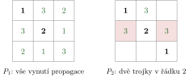
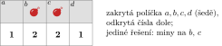
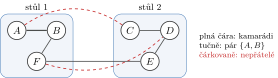
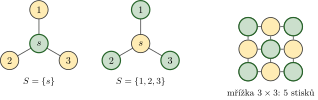
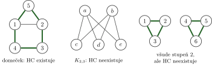

14.9 Úlohy navíc¶
Všechny úlohy jsou typu 3 zápočtového testu: „zformulujte problém jako \(\href{../ch-cook/ch-cook-cook-levinova-veta.html#prob-sat}{\class{woo-pk-prob-sat}{\prob{SAT}}}\)“. Řeš je podle postupu Postup na papíře: kódování do SAT (a oddílu A.3.3): proměnné s významem, klauzule po skupinách „chceme \(\to\) implikace \(\to\) klauzule“, obě implikace, čtení řešení z modelu a velikost formule. Úlohy postupně přidávají modelovací triky: stavební bloky z oddílu 14.3 (úlohy 14.1, 14.5), implikaci s disjunkcí v závěru (14.2, 14.4, 14.6), omezení na konstantně mnoha proměnných (14.3), sekvenční čítač „nejvýše \(k\)“ z cvičení 7.4 (14.4, 14.6, 14.8, v bodech b) i 14.2 a 14.3, ve 14.7), paritu přes Tseitinovu transformaci (14.7, oddíl 14.4) a proměnné s časovým indexem pro plánování (14.6, 14.8). Pododdíl 14.9.4 přidává čtyři úlohy z cizí sbírky: kódování barvení, trojrozměrného párování, hamiltonovské kružnice a dlouhé kružnice.
Neoficiální úlohy
Úlohy v tomto oddílu nejsou oficiální zadání předmětu. Jsou to procvičovací úlohy navíc k látce kapitoly. Každé kódování bylo porovnáno s hrubou silou skriptem v Pythonu: formule se vygenerovala pro stovky až tisíce malých náhodných instancí, rozhodla řešičem (PySAT) a výsledek se porovnal s přímým prohledáním všech řešení úlohy; porovnával se i počet modelů s počtem řešení, čtení řešení z modelu a počty proměnných a klauzulí podle vzorců. Konkrétní instance v bodech c) jsou přepočítané stejně (včetně kroků unit propagation). Kódování v pododdílu 14.9.4 jsou porovnána s hrubou silou na všech grafech do 5 vrcholů (u trojrozměrného párování na všech, resp. náhodných instancích s \(q\le3\)) pomocí malého řešiče DPLL v Pythonu.
14.9.1 Rozcvička¶
Úloha 14.1 (doplnění latinského čtverce)
Latinský čtverec řádu \(n\) je tabulka \(n\times n\) vyplněná čísly \(1,\dots,n\) tak, že v každém řádku i v každém sloupci je každé číslo právě jednou.
Problém \(\href{#un-14-1}{\class{woo-pk-pojem-latin-square-completion}{\prob{Latin Square Completion}}}\).
Vstup: číslo \(n\) a částečně vyplněná tabulka \(n\times n\), tj. množina \(P\) trojic \((r,s,v)\) „na políčku v řádku \(r\) a sloupci \(s\) je předepsané číslo \(v\)“.
Otázka: lze tabulku doplnit na latinský čtverec?
- Navrhněte formuli v CNF, která je splnitelná právě tehdy, když doplnění existuje. Popište proměnné, klauzule po skupinách, korektnost oběma směry, čtení řešení z modelu a počet proměnných a klauzulí.
- Sudoku je latinský čtverec řádu \(n=k^2\), ve kterém navíc každý z \(n\) bloků \(k\times k\) obsahuje každé číslo právě jednou. Co je třeba do formule přidat?
- Pro \(n=3\) rozhodněte pomocí unit propagation instance \(P_1=\{(1,1,1),(2,2,2)\}\) a \(P_2=\{(1,1,1),(2,2,2),(3,3,1)\}\).
Řešení
Redukce: \(\href{#un-14-1}{\class{woo-pk-pojem-latin-square-completion}{\prob{Latin Square Completion}}} \mathrel{\href{../ch-redukce/ch-redukce-jak-porovnat-slozitost-dvou-problemu.html#def-redukce}{\class{woo-pk-def-redukce}{\redp}}} \href{../ch-cook/ch-cook-cook-levinova-veta.html#prob-sat}{\class{woo-pk-prob-sat}{\prob{SAT}}}\), instance \((n,P)\) \(\mapsto\) formule \(\varphi_{n,P}\).
Velikost vstupu. Tabulka má \(n^2\) políček, vstup má tedy velikost aspoň \(n^2\); stačí formule polynomiální v \(n\).
Krok 1 – proměnné. \(x_{r,s,v}\) pro \(r,s,v\in\{1,\dots,n\}\): \(x_{r,s,v}=1\iff\) „na políčku \((r,s)\) je číslo \(v\)“. Celkem \(n^3\) proměnných.
Krok 2 – omezení.
- Chceme: na každém políčku je aspoň jedno číslo. Blok alespoň jedna: \((x_{r,s,1}\lor\dots\lor x_{r,s,n})\) pro každé \(r,s\). (\(n^2\) klauzulí)
- Chceme: na políčku nejvýše jedno číslo. \(x_{r,s,v}\Rightarrow\lnot x_{r,s,w}\), blok nejvýše jedna: \((\lnot x_{r,s,v}\lor\lnot x_{r,s,w})\) pro každé \(r,s\) a \(v<w\). (\(n^2\binom n2\) klauzulí)
- Chceme: v řádku je každé číslo nejvýše jednou: \((\lnot x_{r,s,v}\lor\lnot x_{r,t,v})\) pro každé \(r,v\) a \(s<t\). (\(n^2\binom n2\) klauzulí)
- Chceme: ve sloupci je každé číslo nejvýše jednou: \((\lnot x_{r,s,v}\lor\lnot x_{q,s,v})\) pro každé \(s,v\) a \(r<q\). (\(n^2\binom n2\) klauzulí)
- Chceme: předepsaná čísla zůstanou. Jednotková klauzule \((x_{r,s,v})\) pro každé \((r,s,v)\in P\). (\(|P|\) klauzulí)
Klauzule „v řádku je každé číslo aspoň jednou“ psát nemusíme: řádek má \(n\) políček, na každém je právě jedno číslo (skupiny 1, 2) a žádné číslo se neopakuje (skupina 3), takže \(n\) různých čísel z \(\{1,\dots,n\}\) je každé právě jednou. Pro sloupce totéž.
Krok 3 – formule. \(\varphi_{n,P}\) = konjunkce skupin 1–5.
Krok 4 – korektnost.
- (\(\Rightarrow\)) Je-li \(L\) latinský čtverec, který doplňuje \(P\), položíme \(x_{r,s,v}=1\iff L(r,s)=v\). Skupiny 1 a 2 platí, protože na každém políčku je právě jedno číslo, skupiny 3 a 4, protože se v řádku ani sloupci číslo neopakuje, a skupina 5, protože \(L\) souhlasí s \(P\).
- (\(\Leftarrow\)) V modelu má podle 1 a 2 každé políčko právě jedno \(v\) s \(x_{r,s,v}=1\); to je \(L(r,s)\). Podle 3 a 4 se v řádku ani sloupci číslo neopakuje, tedy (úvaha výše) je každé právě jednou a \(L\) je latinský čtverec. Podle 5 souhlasí s \(P\).
- Čtení řešení: na políčko \((r,s)\) napiš jediné \(v\) s \(x_{r,s,v}=1\).
- Odporuje-li si už samotné \(P\) (dvě čísla na jednom políčku, stejné číslo dvakrát v řádku), je formule nesplnitelná automaticky – správně.
Velikost. \(n^3\) proměnných a \(n^2+3n^2\binom n2+|P|=n^2+\tfrac32n^3(n-1)+|P|=O(n^4)\) klauzulí; pro \(n=3\) je to \(90+|P|\), pro \(n=9\) už \(8\,829+|P|\). Polynomiální.
b) Sudoku. Přidáme skupinu 6: v každém bloku je každé číslo nejvýše jednou, tj. \((\lnot x_{r,s,v}\lor\lnot x_{r',s',v})\) pro každý blok, každé \(v\) a každou dvojici různých políček \((r,s)\ne(r',s')\) téhož bloku. To je \(n\cdot n\binom n2\) klauzulí navíc (pro \(n=9\): \(2\,916\), celkem \(11\,745+|P|\)). Korektnost stejně jako výše; „aspoň jednou v bloku“ plyne opět z holubníku. (Dvojice ležící zároveň v řádku a bloku se zapíšou dvakrát, což nevadí.)
c) Instance \(n=3\).
- \(P_1\): jednotkové klauzule dají \(x_{1,1,1}=x_{2,2,2}=1\) a skupiny 2–4 vynulují ostatní čísla na těchto políčkách, jedničku ve zbytku řádku 1 a sloupce 1 a dvojku ve zbytku řádku 2 a sloupce 2. Na políčku \((2,1)\) tedy nesmí být 1 (sloupec 1) ani 2 (řádek 2), klauzule skupiny 1 je jednotková: \(x_{2,1,3}=1\). Stejně \((1,2)\): ne 1 (řádek 1), ne 2 (sloupec 2), tedy \(x_{1,2,3}=1\). Dál řádek 1 má 1 a 3, takže \((1,3)\) je 2; řádek 2 má 3 a 2, takže \((2,3)\) je 1; sloupec 1 má 1 a 3, takže \((3,1)\) je 2; sloupec 2 má 3 a 2, takže \((3,2)\) je 1; a řádek 3 má 2 a 1, takže \((3,3)\) je 3. Bez větvení dostaneme model, doplnění existuje a je jediné (obrázek níže vlevo).
- \(P_2\): jako výše \(x_{2,1,3}=1\) a \(x_{1,2,3}=1\). Na políčku \((2,3)\) nesmí být 1 (ve sloupci 3 je jednička z \((3,3)\)) ani 2 (řádek 2), takže \(x_{2,3,3}=1\). Klauzule \((\lnot x_{2,1,3}\lor\lnot x_{2,3,3})\) skupiny 3 je v konfliktu: v řádku 2 by byly dvě trojky. Formule je nesplnitelná bez jediného větvení, ačkoli v \(P_2\) žádné číslo není dvakrát v řádku ani ve sloupci. (Ve čtverci řádu 3 má diagonála buď tři stejná, nebo tři různá čísla; \(P_2\) chce na diagonále \(1,2,1\).)

Tučně předepsaná čísla, zeleně čísla vynucená unit propagation. Všimni si: vpravo vynutí propagace trojku na dvě políčka téhož řádku – konflikt bez větvení.
(Ověřeno skriptem: kódování porovnáno s výčtem všech latinských čtverců řádu 2, 3 a 4 (2, 12 a 576 čtverců) na 1 200 náhodných částečných tabulkách; pro \(P=\emptyset\) je počet modelů roven počtu latinských čtverců, se skupinou 6 počtu sudoku \(4\times4\) (288); počty klauzulí podle vzorce; průběh propagace v bodě c) simulován.)
Úloha 14.2 (instalace balíčků)
Správce balíčků má nainstalovat software. Je dána množina balíčků \(B\) (každá verze knihovny je samostatný balíček) a k ní:
- verze: skupiny \(V_1,\dots,V_q\subseteq B\) (různé verze téhož programu); z každé skupiny smí být nainstalován nejvýše jeden balíček;
- závislosti: dvojice \((p,D)\) s \(p\in B\), \(D\subseteq B\) – je-li nainstalován \(p\), musí být nainstalován aspoň jeden balíček z \(D\) (např. „aplikace potřebuje knihovnu \(l_1\) nebo \(l_2\)“); jeden balíček může mít víc závislostí;
- konflikty: dvojice \(\{p,q\}\in K\), které nesmějí být nainstalovány současně;
- cíl: množina \(T\subseteq B\) balíčků, které chce uživatel nainstalovat.
Otázka: existuje instalace \(I\subseteq B\), \(T\subseteq I\), splňující všechny podmínky?
- Navrhněte formuli v CNF, která je splnitelná právě tehdy, když taková instalace existuje (proměnné, klauzule po skupinách, obě implikace, čtení řešení, velikost).
- Uživatel chce instalaci s nejvýše \(k\) balíčky. Doplňte formuli tak, aby zůstala polynomiální i pro \(k\approx|B|/2\), a popište, jak najít nejmenší instalaci opakovaným voláním řešiče.
- \(B=\{a,g,l_1,l_2,c_1,c_2,n_1,n_2\}\), verze \(\{c_1,c_2\}\) a \(\{n_1,n_2\}\), závislosti \((a,\{g\})\), \((a,\{l_1,l_2\})\), \((g,\{c_2\})\), \((l_1,\{c_1\})\), \((l_2,\{n_1,n_2\})\), konflikt \(\{g,n_1\}\) a cíl \(T=\{a\}\). Vypište klauzule a rozhodněte instanci unit propagation. Kolik je přípustných instalací a kolik balíčků má nejmenší z nich?
Řešení
Redukce: \(\href{#un-14-2}{\class{woo-pk-pojem-instalace-balicku}{\prob{Instalace balíčků}}} \mathrel{\href{../ch-redukce/ch-redukce-jak-porovnat-slozitost-dvou-problemu.html#def-redukce}{\class{woo-pk-def-redukce}{\redp}}} \href{../ch-cook/ch-cook-cook-levinova-veta.html#prob-sat}{\class{woo-pk-prob-sat}{\prob{SAT}}}\), instance \((B,V_1,\dots,V_q,\text{závislosti},K,T)\) \(\mapsto\) formule \(\varphi\).
Krok 1 – proměnné. \(x_p\) pro \(p\in B\): \(x_p=1\iff p\in I\) („balíček \(p\) se nainstaluje“). Celkem \(|B|\) proměnných.
Krok 2 – omezení. Značíme \(Z\) počet závislostí.
- Chceme: závislost \((p,D)\) je splněna. Implikace s disjunkcí v závěru \(x_p\Rightarrow\bigvee_{d\in D}x_d\), klauzule \(\bigl(\lnot x_p\lor\bigvee_{d\in D}x_d\bigr)\). (\(Z\) klauzulí; pro \(D=\emptyset\) vyjde \((\lnot x_p)\) – balíček s nesplnitelnou závislostí nelze nainstalovat, správně.)
- Chceme: konfliktní dvojice ne současně. \(x_p\Rightarrow\lnot x_q\), klauzule \((\lnot x_p\lor\lnot x_q)\) pro \(\{p,q\}\in K\). (\(|K|\) klauzulí)
- Chceme: z každé skupiny verzí nejvýše jedna. Blok nejvýše jedna: \((\lnot x_p\lor\lnot x_{p'})\) pro každé \(i\) a \(p\ne p'\) z \(V_i\). (\(\sum_i\binom{|V_i|}2\) klauzulí)
- Chceme: cíl je nainstalován. \((x_t)\) pro \(t\in T\). (\(|T|\) klauzulí)
Krok 3 – formule. \(\varphi\) = konjunkce skupin 1–4.
Krok 4 – závěr.
- (\(\Rightarrow\)) Instalace \(I\) splňuje podmínky: položíme \(x_p=1\iff p\in I\). Klauzule skupiny 1 je splněna, protože buď \(p\notin I\), nebo je v \(I\) některý balíček z \(D\); skupiny 2–4 přímo z podmínek.
- (\(\Leftarrow\)) Z modelu vezmeme \(I=\{p: x_p=1\}\). Skupina 4 dává \(T\subseteq I\), skupina 1 splněné závislosti, 2 žádný konflikt, 3 nejvýše jednu verzi z každé skupiny.
- Čtení řešení: nainstaluj balíčky s \(x_p=1\). Model může obsahovat i balíčky, které nikdo nepotřebuje; otázka se ptá jen na existenci, minimalitu řeší bod b).
- Velikost: \(|B|\) proměnných a \(Z+|K|+\sum_i\binom{|V_i|}2+|T|\) klauzulí; každá klauzule skupiny 1 je dlouhá jako zápis závislosti. Polynomiální.
(nad rámec přednášky) Rozhodnout instalovatelnost je obecně NP-úplné, a proto některé správce balíčků (např. knihovna libsolv v openSUSE nebo p2 v Eclipse) používají uvnitř řešič \(\href{../ch-cook/ch-cook-cook-levinova-veta.html#prob-sat}{\class{woo-pk-prob-sat}{\prob{SAT}}}\)u.
b) Nejvýše \(k\) balíčků. Přidáme blok nejvýše \(k\) z \(x_p\), \(p\in B\), sekvenčním čítačem z cvičení 7.4: pro \(1\le k<|B|\) je to \(k(|B|-1)\) nových proměnných a \(2|B|k+|B|-4k\) klauzulí (pro \(k=0\) klauzule \((\lnot x_p)\), pro \(k\ge|B|\) nic). Zakázat všechny \((k+1)\)-tice nejde: pro \(k\approx|B|/2\) je jich exponenciálně mnoho. Nejmenší instalace: řešič voláme pro \(k=0,1,2,\dots\), dokud formule není splnitelná, nebo binárním vyhledáváním přes \(k\in\{0,\dots,|B|\}\) s \(O(\log|B|)\) voláními – stejně jako u největší kliky v oddílu 14.3.6. Model pro nejmenší \(k\) je nejmenší instalace.
c) Instance. Devět klauzulí:
Unit propagation: \((a)\) dá \(a=1\); \((\lnot a\lor g)\) dá \(g=1\); \((\lnot g\lor c_2)\) dá \(c_2=1\); \((\lnot c_1\lor\lnot c_2)\) dá \(c_1=0\); \((\lnot l_1\lor c_1)\) dá \(l_1=0\); \((\lnot a\lor l_1\lor l_2)\) dá \(l_2=1\); \((\lnot g\lor\lnot n_1)\) dá \(n_1=0\); \((\lnot l_2\lor n_1\lor n_2)\) dá \(n_2=1\). Všech osm proměnných je přiřazeno bez větvení a bez konfliktu, takže formule je splnitelná a model je jediný: jediná přípustná instalace je \(I=\{a,g,l_2,c_2,n_2\}\), nejmenší má tedy 5 balíčků (s čítačem z bodu b) je formule pro \(k=4\) nesplnitelná a pro \(k=5\) splnitelná). Kdyby navíc \(l_2\) potřebovala \(c_1\), dala by klauzule \((\lnot l_2\lor c_1)\) konflikt a instalace by neexistovala.
(Ověřeno skriptem: kódování porovnáno s výčtem všech podmnožin \(B\) na 3 000 náhodných instancích s nejvýše 7 balíčky, včetně počtu modelů a varianty s čítačem; v bodě c) propagace, počet modelů 1 a hranice \(k=5\).)
Úloha 14.3 (hledání min)
Ve hře Hledání min je mřížka \(R\times S\). Některá políčka jsou odkrytá: miny na nich nejsou a nesou číslo \(c(p)\in\{0,\dots,8\}\) – počet min mezi (až osmi) sousedními políčky, včetně diagonálních. Ostatní políčka jsou zakrytá.
Problém \(\href{#un-14-3}{\class{woo-pk-pojem-minesweeper}{\prob{Minesweeper}}}\) (konzistence).
Vstup: rozměry \(R,S\) a odkrytá políčka s čísly.
Otázka: lze do zakrytých políček rozmístit miny tak, aby všechna čísla souhlasila?
- Navrhněte formuli v CNF, která je splnitelná právě tehdy, když rozmístění existuje. Kolik klauzulí nejvýše dá jedno odkryté číslo? Proč tu smíme zakazovat celé \((c+1)\)-tice, ačkoli to u „nejvýše \(k\)“ obecně je chyba?
- Hra navíc prozradí celkový počet min \(M\). Doplňte formuli.
- Mřížka \(2\times4\): horní řádek je zakrytý (políčka \(a,b,c,d\) zleva), dolní řádek je odkrytý s čísly \(1,2,2,1\). Vypište klauzule a rozhodněte, kde jsou miny. Co když \(M=3\)?
Řešení
Redukce: \(\href{#un-14-3}{\class{woo-pk-pojem-minesweeper}{\prob{Minesweeper}}} \mathrel{\href{../ch-redukce/ch-redukce-jak-porovnat-slozitost-dvou-problemu.html#def-redukce}{\class{woo-pk-def-redukce}{\redp}}} \href{../ch-cook/ch-cook-cook-levinova-veta.html#prob-sat}{\class{woo-pk-prob-sat}{\prob{SAT}}}\), mřížka s čísly \(\mapsto\) formule \(\varphi\).
Krok 1 – proměnné. \(m_q\) pro každé zakryté políčko \(q\): \(m_q=1\iff\) „na \(q\) je mina“. Pro odkryté políčko \(p\) značíme \(N(p)\) množinu jeho zakrytých sousedů, \(d=|N(p)|\le8\) a \(c=c(p)\) (odkrytí sousedé miny nemají, do čísla nepřispívají).
Krok 2 – omezení. Pro každé odkryté \(p\) chceme „mezi \(N(p)\) je právě \(c\) min“:
- Chceme: nejvýše \(c\) min, tj. žádných \(c+1\) sousedů není samé miny. Pro každou \((c+1)\)-prvkovou \(A\subseteq N(p)\) klauzule \(\bigl(\bigvee_{q\in A}\lnot m_q\bigr)\). (\(\binom d{c+1}\) klauzulí, pro \(c\ge d\) žádná)
- Chceme: aspoň \(c\) min. Kdyby jich bylo méně, bylo by aspoň \(d-c+1\) sousedů bez miny. Proto pro každou \((d-c+1)\)-prvkovou \(A\subseteq N(p)\) klauzule \(\bigl(\bigvee_{q\in A}m_q\bigr)\). (\(\binom d{c-1}\) klauzulí, pro \(c=0\) žádná; je-li \(c>d\), instance je zjevně nekonzistentní a vypíšeme pevnou nesplnitelnou formuli \((z)\land(\lnot z)\).)
Proč smíme zakazovat \((c+1)\)-tice. Varování u kódování „nejvýše \(k\)“ (rámeček „Typické chyby u kódování“ za postupem Postup na papíře: kódování do SAT) se týká \(k\) a \(n\) rostoucích se vstupem, kde je \(\binom n{k+1}\) exponenciální. Tady je \(d\le8\) konstanta: jedno číslo dá \(\binom d{c+1}+\binom d{c-1}\le\binom 85+\binom 83=112\) klauzulí (maximum pro \(d=8\), \(c=4\)), každou nejvýše o 8 literálech. Obecně: podmínku na konstantně mnoha proměnných smíme zapsat zákazem všech špatných ohodnocení.
Krok 3 – formule. \(\varphi\) = konjunkce skupin 1 a 2 přes všechna odkrytá \(p\).
Krok 4 – závěr.
- (\(\Rightarrow\)) Rozmístění, se kterým souhlasí všechna čísla: \(m_q=1\) právě na minách. Mezi \(N(p)\) je přesně \(c\) min, takže žádná \((c+1)\)-tice nejsou samé miny (skupina 1) a bez miny je jen \(d-c\) sousedů, takže každá \((d-c+1)\)-tice minu obsahuje (skupina 2).
- (\(\Leftarrow\)) Miny dáme na \(\{q: m_q=1\}\). Kdyby mezi \(N(p)\) bylo aspoň \(c+1\) min, porušíme klauzuli skupiny 1 pro \(c+1\) z nich; kdyby jich bylo nejvýše \(c-1\), je aspoň \(d-c+1\) sousedů bez miny a porušíme skupinu 2. Je jich tedy právě \(c\) a číslo souhlasí.
- Čtení řešení: miny jsou na zakrytých políčkách s \(m_q=1\).
- Velikost: nejvýše \(RS\) proměnných a nejvýše \(112\cdot RS\) klauzulí, tedy \(O(RS)\).
b) Celkem \(M\) min. Nechť \(H\) je množina zakrytých políček, \(h=|H|\). Chceme „právě \(M\) z \(m_q\), \(q\in H\)“: nejvýše \(M\) sekvenčním čítačem nad \(m_q\) (cvičení 7.4) a aspoň \(M\) jako „nejvýše \(h-M\) nepravdivých“, tj. druhý čítač nad literály \(\lnot m_q\) (čítač funguje pro libovolné literály, má vlastní pomocné proměnné). Dohromady nejvýše \(h(h-1)\) nových proměnných a \(O(h^2)\) klauzulí. Pro \(M>h\) vypíšeme nesplnitelnou formuli. Tady \(h\) roste se vstupem, takže zákaz všech \((M+1)\)-tic by byl chyba.
c) Mřížka \(2\times4\). Zakrytí sousedé: \(N=\{a,b\}\) pro číslo 1 vlevo, \(\{a,b,c\}\) a \(\{b,c,d\}\) pro obě dvojky, \(\{c,d\}\) pro 1 vpravo. Klauzule (skupina 1, pak 2):
- první 1: \((\lnot a\lor\lnot b)\), \((a\lor b)\);
- první 2: \((\lnot a\lor\lnot b\lor\lnot c)\), \((a\lor b)\), \((a\lor c)\), \((b\lor c)\);
- druhá 2: \((\lnot b\lor\lnot c\lor\lnot d)\), \((b\lor c)\), \((b\lor d)\), \((c\lor d)\);
- druhá 1: \((\lnot c\lor\lnot d)\), \((c\lor d)\).
Celkem 12 klauzulí (některé se opakují). Jednotková klauzule není žádná, propagace sama nic nedá; větvíme podle \(a\):
- \(a=1\): \((\lnot a\lor\lnot b)\) dá \(b=0\), pak \((b\lor c)\) dá \(c=1\) a \((b\lor d)\) dá \(d=1\) – klauzule \((\lnot c\lor\lnot d)\) je v konfliktu.
- \(a=0\): \((a\lor b)\) dá \(b=1\), \((a\lor c)\) dá \(c=1\), \((\lnot c\lor\lnot d)\) dá \(d=0\). Všechny klauzule jsou splněné.
Rozmístění je jediné: miny na \(b\) a \(c\). S údajem \(M=3\) je formule nesplnitelná (jediné rozmístění má 2 miny); s \(M=2\) splnitelná.

Mřížka z bodu c) s jediným rozmístěním min. Všimni si: každé číslo vidí jen dvě nebo tři zakrytá políčka, takže jeho klauzulí je jen pár.
(Ověřeno skriptem: kódování, včetně čítačů pro \(M\), porovnáno s hrubou silou přes všechna rozmístění min na 2 500 náhodných mřížkách do \(3\times4\), i počty modelů; maximum 112 klauzulí na číslo přepočteno; bod c) včetně propagace v obou větvích.)
14.9.2 Na úrovni testu¶
Úloha 14.4 (rozsazení svatebních hostů)
Na svatbě je \(n\) hostů \(H\) a \(k\) stolů \(1,\dots,k\), u každého je \(c\) míst (\(c<n\)). Každý host sedí u právě jednoho stolu a u stolu sedí nejvýše \(c\) hostů. Dále:
- dvojice nepřátel \(N\subseteq\binom H2\) nesmějí sedět u stejného stolu;
- páry \(P\subseteq\binom H2\) musejí sedět u stejného stolu;
- každý host \(g\) musí mít u svého stolu aspoň jednoho kamaráda z množiny \(F(g)\subseteq H\) (kamarádství je symetrické).
- Navrhněte formuli v CNF, která je splnitelná právě tehdy, když rozsazení existuje (proměnné, klauzule po skupinách, obě implikace, čtení řešení, velikost). Velikost musí být polynomiální i pro \(c\approx n/2\).
- Stoly jsou stejné, takže každé rozsazení má \(k!\) „přečíslovaných“ kopií. Přidejte klauzuli, která tuto symetrii zčásti odstraní, a zdůvodněte, že nezmění splnitelnost.
- Hosté \(A,\dots,F\), \(k=2\) stoly po \(c=3\) místech, pár \(\{A,B\}\), nepřátelé \(\{A,C\}\) a \(\{D,F\}\), kamarádství \(AB\), \(CD\), \(DE\), \(EF\), \(BF\). Najděte všechna rozsazení a spočítejte proměnné a klauzule formule.
Řešení
Redukce: \(\href{#un-14-4}{\class{woo-pk-pojem-rozsazeni-hostu}{\prob{Rozsazení hostů}}} \mathrel{\href{../ch-redukce/ch-redukce-jak-porovnat-slozitost-dvou-problemu.html#def-redukce}{\class{woo-pk-def-redukce}{\redp}}} \href{../ch-cook/ch-cook-cook-levinova-veta.html#prob-sat}{\class{woo-pk-prob-sat}{\prob{SAT}}}\), instance \((H,k,c,N,P,F)\) \(\mapsto\) formule \(\varphi\).
Krok 1 – proměnné. \(x_{g,t}\) pro \(g\in H\), \(t\in\{1,\dots,k\}\): \(x_{g,t}=1\iff\) „host \(g\) sedí u stolu \(t\)“ (\(nk\) proměnných); k tomu pomocné proměnné čítačů ve skupině 6.
Krok 2 – omezení.
- Chceme: každý host sedí aspoň u jednoho stolu: \((x_{g,1}\lor\dots\lor x_{g,k})\) pro každé \(g\). (\(n\) klauzulí)
- Chceme: nejvýše u jednoho stolu: \((\lnot x_{g,t}\lor\lnot x_{g,u})\) pro každé \(g\) a \(t<u\). (\(n\binom k2\))
- Chceme: nepřátelé ne u stejného stolu. \(x_{g,t}\Rightarrow\lnot x_{h,t}\), klauzule \((\lnot x_{g,t}\lor\lnot x_{h,t})\) pro \(\{g,h\}\in N\) a každé \(t\). (\(k|N|\))
- Chceme: pár u stejného stolu. Ekvivalence \(x_{g,t}\Leftrightarrow x_{h,t}\), klauzule \((\lnot x_{g,t}\lor x_{h,t})\) a \((x_{g,t}\lor\lnot x_{h,t})\) pro \(\{g,h\}\in P\) a každé \(t\). (\(2k|P|\))
- Chceme: u stolu hosta \(g\) sedí některý jeho kamarád. Implikace s disjunkcí v závěru \(x_{g,t}\Rightarrow\bigvee_{h\in F(g)}x_{h,t}\), klauzule \(\bigl(\lnot x_{g,t}\lor\bigvee_{h\in F(g)}x_{h,t}\bigr)\) pro každé \(g\) a \(t\). (\(nk\); pro \(F(g)=\emptyset\) vyjde \((\lnot x_{g,t})\) pro všechna \(t\) a se skupinou 1 spor – správně, host bez kamarádů posadit nelze.)
- Chceme: u stolu nejvýše \(c\) hostů. Blok nejvýše \(c\) z \(x_{g_1,t},\dots,x_{g_n,t}\) sekvenčním čítačem (cvičení 7.4), pro každý stůl s vlastními pomocnými proměnnými: \(k\cdot c(n-1)\) proměnných a \(k(2nc+n-4c)\) klauzulí (pro \(c=0\) klauzule \((\lnot x_{g,t})\)).
Krok 3 – formule. \(\varphi\) = konjunkce skupin 1–6.
Krok 4 – závěr.
- (\(\Rightarrow\)) Rozsazení \(\sigma:H\to\{1,\dots,k\}\): položíme \(x_{g,t}=1\iff\sigma(g)=t\). Skupiny 1, 2 platí, protože každý sedí u právě jednoho stolu; 3, 4, 5 přímo z podmínek; u každého stolu je nejvýše \(c\) jedniček, takže pomocné proměnné čítače lze doplnit (cvičení 7.4).
- (\(\Leftarrow\)) Podle 1, 2 má každý host právě jeden stůl \(\sigma(g)\). Podle 3 nesedí nepřátelé spolu, podle 4 sedí páry spolu, podle 5 má každý u stolu kamaráda (klauzule pro \(t=\sigma(g)\)) a podle 6 (vlastnost čítače) sedí u stolu nejvýše \(c\) hostů.
- Čtení řešení: host \(g\) sedí u jediného stolu \(t\) s \(x_{g,t}=1\).
- Velikost: \(nk+kc(n-1)\) proměnných a \(n+n\binom k2+k|N|+2k|P|+nk+k(2nc+n-4c)\) klauzulí, tedy \(O(nk^2+k|N|+k|P|+nkc)\). Zakázat všechny \((c+1)\)-tice hostů u stolu by dalo \(k\binom n{c+1}\) klauzulí – pro \(c\approx n/2\) exponenciálně mnoho.
b) Symetrie. Přidáme \((x_{g_1,1})\): první host sedí u stolu 1. Splnitelnost se nezmění: má-li úloha rozsazení, prohodíme čísla stolu 1 a stolu hosta \(g_1\) – všechny stoly mají stejnou kapacitu a podmínky se na čísla stolů neodkazují, takže dostaneme rozsazení, ve kterém \(g_1\) sedí u stolu 1. Naopak každý model nové formule je modelem staré. Řešič pak neprohledává \(k\)-krát totéž (úplné odstranění symetrie by potřebovalo víc klauzulí).
c) Instance. Úvahou: \(A\) a \(B\) sedí spolu (pár). Jediný kamarád \(C\) je \(D\), takže \(C\) sedí s \(D\), a protože jsou \(A\) a \(C\) nepřátelé, sedí \(C,D\) u druhého stolu než \(A,B\). \(F\) je nepřítel \(D\), musí tedy k \(A,B\) (kamaráda \(B\) tam má). \(E\) zbude poslední místo u \(C,D\) (kamaráda \(D\) tam má). Kontrola: \(A\) má \(B\), \(B\) má \(A\) i \(F\), \(C\) i \(E\) mají \(D\), \(D\) má \(C\) i \(E\). Rozsazení je \(\{A,B,F\}\), \(\{C,D,E\}\) a jeho zrcadlo (prohozené stoly) – dvě řešení; s klauzulí \((x_{A,1})\) z bodu b) jen první. Při \(c=4\) by \(E\) mohl sedět u kteréhokoli stolu (čtyři rozsazení).
Velikost formule: \(12\) proměnných \(x_{g,t}\) a \(2\cdot3\cdot5=30\) pomocných, celkem 42; klauzulí \(6+6+4+4+12+2\cdot30=92\) (skupiny 1–6 v tomto pořadí, čítač \(2\cdot6\cdot3+6-12=30\) na stůl).

Rozsazení z bodu c). Všimni si: kamarádství \(EF\) vede mezi stoly – nevadí, každý má u stolu jiného kamaráda.
(Ověřeno skriptem: kódování porovnáno s výčtem všech rozsazení na 1 500 náhodných instancích do 6 hostů a 3 stolů, včetně počtu modelů a počtů proměnných a klauzulí; v bodě c) obě rozsazení, varianta \(c=4\) a jeden model s klauzulí symetrie.)
Úloha 14.5 (Doplnění dam jako SAT)
Problém \(\href{#un-14-5}{\class{woo-pk-pojem-queens-completion}{\prob{Queens Completion}}}\). Na šachovnici \(n\times n\) jsou na políčkách z množiny \(P\) už postavené dámy. Lze přidat další dámy tak, aby jich na šachovnici bylo celkem \(n\) a žádné dvě se neohrožovaly (nestály ve stejném řádku, sloupci ani na stejné diagonále)? Políčko je dvojice (řádek, sloupec) \((r,s)\), \(r,s\in\{1,\dots,n\}\). Vstup je šachovnice zapsaná jako tabulka \(n\times n\) (u každého políčka, zda na něm dáma stojí).
- Navrhněte kódování do \(\href{../ch-cook/ch-cook-cook-levinova-veta.html#prob-sat}{\class{woo-pk-prob-sat}{\prob{SAT}}}\)u: proměnné s významem, klauzule po skupinách, korektnost oběma směry, čtení řešení z modelu a počet proměnných a klauzulí v závislosti na \(n\) a \(|P|\).
- Pro \(n=4\) rozhodněte instance \(P=\{(1,2)\}\) a \(P=\{(1,1)\}\) – unit propagation a nejvýše jedním větvením.
Řešení
Redukce: \(\href{#un-14-5}{\class{woo-pk-pojem-queens-completion}{\prob{Queens Completion}}} \mathrel{\href{../ch-redukce/ch-redukce-jak-porovnat-slozitost-dvou-problemu.html#def-redukce}{\class{woo-pk-def-redukce}{\redp}}} \href{../ch-cook/ch-cook-cook-levinova-veta.html#prob-sat}{\class{woo-pk-prob-sat}{\prob{SAT}}}\), instance \((n,P)\) \(\mapsto\) formule \(\varphi_{n,P}\) v CNF.
Velikost vstupu. Instance je šachovnice \(n\times n\) s vyznačenými políčky, má tedy velikost \(\Theta(n^2)\); polynomiální v \(n\) znamená polynomiální ve vstupu.
Krok 1 – proměnné. \(q_{r,s}\) pro \(r,s\in\{1,\dots,n\}\): \(q_{r,s}=1\iff\) „na políčku \((r,s)\) stojí dáma“. Celkem \(n^2\) proměnných.
Krok 2 – omezení.
- Chceme: v každém řádku je aspoň jedna dáma. Blok alespoň jedna: \((q_{r,1}\lor\dots\lor q_{r,n})\) pro každé \(r\). (\(n\) klauzulí)
- Chceme: v řádku nejvýše jedna dáma. \(q_{r,s}\Rightarrow\lnot q_{r,t}\), blok nejvýše jedna: \((\lnot q_{r,s}\lor\lnot q_{r,t})\) pro každé \(r\) a \(s<t\). (\(n\binom n2\) klauzulí)
- Chceme: ve sloupci nejvýše jedna dáma: \((\lnot q_{r,s}\lor\lnot q_{t,s})\) pro každé \(s\) a \(r<t\). (\(n\binom n2\) klauzulí)
- Chceme: na diagonále nejvýše jedna dáma. Políčka \((r,s)\neq(t,u)\) leží na společné diagonále, právě když \(|r-t|=|s-u|\); pro každou takovou neuspořádanou dvojici klauzule \((\lnot q_{r,s}\lor\lnot q_{t,u})\).
- Chceme: postavené dámy zůstanou. Jednotková klauzule \((q_{r,s})\) pro každé \((r,s)\in P\). (\(|P|\) klauzulí)
„Celkem \(n\) dam“ zvlášť kódovat nemusíme: v \(n\) řádcích s nejvýše jednou dámou je dam \(n\), právě když je v každém řádku aspoň jedna – to je skupina 1.
Krok 3 – formule. \(\varphi_{n,P}\) = konjunkce skupin 1–5.
Krok 4 – korektnost.
- (\(\Rightarrow\)) Nechť \(Q\supseteq P\) je množina \(n\) neohrožujících se dam. Položíme \(q_{r,s}=1\iff(r,s)\in Q\). Žádné dvě dámy nejsou v jednom řádku, takže \(n\) dam obsadí každý z \(n\) řádků právě jednou – platí skupiny 1 a 2. Skupiny 3 a 4 platí, protože se dámy neohrožují, skupina 5, protože \(P\subseteq Q\).
- (\(\Leftarrow\)) V modelu vezmeme \(Q=\{(r,s): q_{r,s}=1\}\). Podle 1 a 2 je v každém řádku právě jedna dáma, takže \(|Q|=n\). Dvě různé dámy z \(Q\) nejsou ve stejném řádku (2), sloupci (3) ani na diagonále (4) – neohrožují se. Podle 5 je \(P\subseteq Q\). Tedy \(Q\) je hledané doplnění.
- Čtení řešení: dámy stojí na políčkách s \(q_{r,s}=1\); pro každý řádek \(r\) je to jediné \(s\).
- Stojí-li v \(P\) dvě dámy, které se ohrožují, je formule nesplnitelná automaticky (jednotkové klauzule a klauzule skupiny 2–4 si odporují) – správně, taková instance doplnění nemá.
Velikost. Skupina 4: diagonála jednoho směru (\(r-s\) konstantní) má délku \(L\in\{1,2,\dots,n-1,n,n-1,\dots,1\}\) a dává \(\binom L2\) dvojic, tedy \(2\sum_{L=1}^{n-1}\binom L2+\binom n2=2\binom n3+\binom n2=\frac{n(n-1)(2n-1)}{6}\); oba směry dávají dvojnásobek. Celkem
Pro \(n=4\): \(4+24+24+28=80\) klauzulí a \(|P|\) jednotkových. To je polynomiální ve velikosti vstupu \(\Theta(n^2)\).
b) Instance \(n=4\). Řádek \(r\) je shora, sloupec \(s\) zleva.
- \(P=\{(1,2)\}\): jednotková klauzule dá \(q_{1,2}=1\) a skupiny 2–4 vynulují políčka, která dáma ohrožuje: \((1,1),(1,3),(1,4)\), \((2,2),(3,2),(4,2)\), \((2,1),(2,3),(3,4)\). V řádku 2 zbude jen \((2,4)\), klauzule skupiny 1 se stane jednotkovou: \(q_{2,4}=1\). Ta vynuluje \((3,3)\) (diagonála) a \((4,4)\) (sloupec); v řádku 3 zbude \((3,1)\), tedy \(q_{3,1}=1\), a v řádku 4 zbude \((4,3)\), \(q_{4,3}=1\). Bez jediného větvení dostaneme model, dámy ve sloupcích \((2,4,1,3)\) – doplnění existuje a je jediné.
- \(P=\{(1,1)\}\): \(q_{1,1}=1\) vynuluje zbytek řádku 1, sloupce 1 a diagonálu \((2,2),(3,3),(4,4)\). V řádku 2 zbývají \((2,3)\) a \((2,4)\), větvíme. Při \(q_{2,3}=1\) jsou v řádku 3 všechna políčka ohrožena (\((3,1)\) sloupec dámy \((1,1)\), \((3,2)\) a \((3,4)\) diagonály dámy \((2,3)\), \((3,3)\) sloupec i diagonála) – klauzule řádku 3 je v konfliktu. Při \(q_{2,4}=1\) zbude v řádku 3 jen \((3,2)\), tedy \(q_{3,2}=1\), a v řádku 4 je pak vše ohroženo (\((4,1)\), \((4,2)\), \((4,4)\) sloupce, \((4,3)\) diagonála dámy \((3,2)\)) – konflikt. Formule je nesplnitelná, doplnění neexistuje.

Vlevo jediné doplnění pro \(P=\{(1,2)\}\), vpravo políčka ohrožená dámou \((1,1)\). Všimni si: vpravo zbývá v řádku 2 jen \((2,3)\) nebo \((2,4)\) a obě volby vedou ke konfliktu o řádek níž.
(Kódování porovnáno s hrubou silou přes všechny permutace pro \(n\le6\) a všechna \(P\) s nejvýše dvěma dámami, 1 189 instancí, z toho 234 kladných; počty klauzulí podle vzorce pro \(n\le6\); pro \(n=4\) výše ověřeny i počty modelů 1 a 0.) (nad rámec přednášky) Problém \(\href{#un-14-5}{\class{woo-pk-pojem-queens-completion}{\prob{Queens Completion}}}\) je NP-úplný (Gent, Jefferson, Nightingale 2017), zatímco prázdnou šachovnici (\(P=\emptyset\)) umíme pro \(n\ge4\) vyplnit přímou konstrukcí.
Úloha 14.6 (rozvrh úloh se závislostmi)
Na \(m\) stejných procesorech se má provést \(n\) úloh \(J\); každá trvá jeden časový krok. Kroky jsou \(1,\dots,T\) (rozvrh se zadává tabulkou kroků, takže vstup má velikost aspoň \(T\)). V jednom kroku běží nejvýše \(m\) úloh. Úloha \(j\) smí běžet nejdříve v kroku \(r_j\) a nejpozději v kroku \(d_j\) (\(1\le r_j\le d_j\le T\)). Závislosti \(Z\subseteq J\times J\): pro \((i,j)\in Z\) musí \(i\) běžet v ostře dřívějším kroku než \(j\).
Otázka: existuje rozvrh, tj. přiřazení kroku \(\sigma(j)\) každé úloze splňující všechny podmínky?
- Navrhněte formuli v CNF, která je splnitelná právě tehdy, když rozvrh existuje (proměnné, klauzule po skupinách, obě implikace, čtení rozvrhu z modelu, velikost).
- Jak pomocí formule najít nejmenší \(T\), pro které rozvrh existuje (bez oken, tj. \(r_j=1\), \(d_j=T\))? Jaké dolní meze pro \(T\) jsou vidět hned?
- \(J=\{a,b,c,d,e,f\}\), \(m=2\), bez oken, závislosti \(a\to d\), \(b\to d\), \(c\to d\), \(d\to e\). Rozhodněte úvahou pro \(T=3\) a \(T=4\) a spočítejte proměnné a klauzule obou formulí.
Řešení
Redukce: \(\href{#un-14-6}{\class{woo-pk-pojem-rozvrh-se-zavislostmi}{\prob{Rozvrh se závislostmi}}} \mathrel{\href{../ch-redukce/ch-redukce-jak-porovnat-slozitost-dvou-problemu.html#def-redukce}{\class{woo-pk-def-redukce}{\redp}}} \href{../ch-cook/ch-cook-cook-levinova-veta.html#prob-sat}{\class{woo-pk-prob-sat}{\prob{SAT}}}\), instance \((J,m,T,r,d,Z)\) \(\mapsto\) formule \(\varphi_T\).
Krok 1 – proměnné. \(x_{j,t}\) pro \(j\in J\), \(t\in\{1,\dots,T\}\): \(x_{j,t}=1\iff\) „úloha \(j\) běží v kroku \(t\)“ (\(nT\) proměnných), k tomu pomocné proměnné čítačů.
Krok 2 – omezení.
- Chceme: úloha běží v nějakém kroku svého okna: \((x_{j,r_j}\lor x_{j,r_j+1}\lor\dots\lor x_{j,d_j})\) pro každé \(j\). (\(n\) klauzulí)
- Chceme: úloha běží nejvýše jednou: \((\lnot x_{j,t}\lor\lnot x_{j,u})\) pro každé \(j\) a \(t<u\). (\(n\binom T2\)) Se skupinou 1 to znamená, že mimo okno je \(x_{j,t}=0\).
- Chceme: v kroku \(t\) nejvýše \(m\) úloh. Blok nejvýše \(m\) z \(x_{1,t},\dots,x_{n,t}\) sekvenčním čítačem (cvičení 7.4) pro každé \(t\): \(T\cdot m(n-1)\) proměnných a \(T(2nm+n-4m)\) klauzulí (pro \(m<n\); pro \(m\ge n\) nic).
- Chceme: závislost \((i,j)\). Běží-li \(j\) v kroku \(t\), běžela \(i\) v některém dřívějším: \(x_{j,t}\Rightarrow x_{i,1}\lor\dots\lor x_{i,t-1}\), klauzule \((\lnot x_{j,t}\lor x_{i,1}\lor\dots\lor x_{i,t-1})\) pro \(t=1,\dots,T\) (pro \(t=1\) je to \((\lnot x_{j,1})\)). (\(|Z|\cdot T\) klauzulí)
Skupinu 4 lze psát i jako zákazy dvojic \((\lnot x_{i,u}\lor\lnot x_{j,t})\) pro \(u\ge t\); díky skupinám 1 a 2 je to totéž, jen s \(O(T^2)\) klauzulemi na závislost.
Krok 3 – formule. \(\varphi_T\) = konjunkce skupin 1–4.
Krok 4 – závěr.
- (\(\Rightarrow\)) Rozvrh \(\sigma\): položíme \(x_{j,t}=1\iff\sigma(j)=t\). Skupiny 1, 2 platí, protože \(\sigma(j)\) je jediný krok a leží v okně; v každém kroku je nejvýše \(m\) jedniček, takže čítač lze doplnit; skupina 4 platí, protože \(\sigma(i)<\sigma(j)\).
- (\(\Leftarrow\)) Podle 1 a 2 má každá úloha právě jeden krok \(\sigma(j)\in[r_j,d_j]\). Podle 3 běží v každém kroku nejvýše \(m\) úloh. Pro \((i,j)\in Z\) dá klauzule skupiny 4 s \(t=\sigma(j)\) krok \(u<\sigma(j)\) s \(x_{i,u}=1\), a protože \(i\) běží jen jednou, je \(\sigma(i)=u<\sigma(j)\).
- Čtení rozvrhu: úloha \(j\) běží v jediném kroku \(t\) s \(x_{j,t}=1\).
- Velikost: \(nT+Tm(n-1)\) proměnných a \(n+n\binom T2+|Z|T+T(2nm+n-4m)\) klauzulí – polynomiální v \(n\), \(T\) a \(|Z|\).
b) Nejmenší \(T\). Formuli \(\varphi_T\) sestavíme a rozhodneme pro \(T=1,2,\dots\) (nebo binárním vyhledáváním); bez oken stačí \(T\le n\) (úlohy lze pustit po jedné v topologickém pořadí závislostí; mají-li závislosti cyklus, rozvrh neexistuje pro žádné \(T\) a už \(\varphi_n\) je nesplnitelná). Dolní meze: \(T\ge\lceil n/m\rceil\) (v kroku běží nejvýše \(m\) úloh) a \(T\ge\) počet úloh na nejdelším řetězci závislostí. (nad rámec přednášky) Je-li \(m\) součástí vstupu, je rozhodnutí NP-úplné (Ullman 1975), proto se takové rozvrhy v praxi předávají řešičům.
c) Instance. Obě dolní meze dávají 3: \(\lceil6/2\rceil=3\) a nejdelší řetězec \(a\to d\to e\) má tři úlohy. Přesto \(T=3\) nejde: \(d\) musí běžet až po \(a\), \(b\) i \(c\); ty tři se do jednoho kroku nevejdou (\(m=2\)), zaberou aspoň dva kroky, takže \(\sigma(d)\ge3\) a \(\sigma(e)\ge4>3\). Formule \(\varphi_3\) je nesplnitelná. \(T=4\) jde například krok 1: \(a,b\); krok 2: \(c,f\); krok 3: \(d\); krok 4: \(e\) (rozvrhů je celkem 18).
Velikost: \(T=3\): \(18+3\cdot2\cdot5=48\) proměnných a \(6+6\cdot3+4\cdot3+3\cdot22=102\) klauzulí; \(T=4\): \(24+40=64\) proměnných a \(6+6\cdot6+4\cdot4+4\cdot22=146\) klauzulí (čítač pro \(n=6\), \(m=2\) má \(2\cdot6\cdot2+6-8=22\) klauzulí).
Rozvrh pro \(T=4\). Všimni si: procesor 2 v krocích 3 a 4 stojí, protože \(e\) čeká na \(d\) – proto nepomůže ani to, že úloh je jen \(6=3\cdot m\).
(Ověřeno skriptem: kódování porovnáno s výčtem všech rozvrhů na 1 500 náhodných instancích (do 6 úloh, \(T\le4\), s okny i bez), včetně počtu modelů a počtů klauzulí; v bodě c) \(\varphi_3\) nesplnitelná, \(\varphi_4\) splnitelná, 18 rozvrhů.)
14.9.3 Těžší úlohy¶
Úloha 14.7 (zhasni světla nejvýše \(k\) stisky)
Hra Zhasni světla na grafu \(G=(V,E)\), \(n=|V|\), \(m=|E|\): v každém vrcholu je světlo, na začátku svítí vrcholy z množiny \(L\subseteq V\). Stisk vrcholu \(v\) přepne (rozsvítí \(\leftrightarrow\) zhasne) světlo ve \(v\) i ve všech jeho sousedech, tedy v uzavřeném okolí \(N[v]=\{v\}\cup\{u:\{u,v\}\in E\}\).
Otázka: lze nejvýše \(k\) stisky zhasnout všechna světla?
- Zdůvodněte, že stačí rozhodnout, které vrcholy stisknout (množina \(S\)). Kdy je vrchol \(u\) na konci zhasnutý?
- Navrhněte formuli v CNF, která je splnitelná právě tehdy, když odpověď je \(\ANO\). Kolik klauzulí by měl přímý zápis podmínky pro jeden vrchol? Použijte Tseitinovu transformaci tak, aby formule bez podmínky na \(k\) měla \(O(n+m)\) klauzulí, a pak přidejte podmínku „nejvýše \(k\) stisků“.
- Hvězda \(K_{1,3}\) (střed \(s\), listy \(1,2,3\)), svítí všechna světla. Najděte všechna řešení a rozhodněte pro \(k=0\) a \(k=1\). Co když na začátku svítí jen list 1?
Řešení
Redukce: \(\href{#un-14-7}{\class{woo-pk-pojem-zhasni-svetla}{\prob{Zhasni světla}}} \mathrel{\href{../ch-redukce/ch-redukce-jak-porovnat-slozitost-dvou-problemu.html#def-redukce}{\class{woo-pk-def-redukce}{\redp}}} \href{../ch-cook/ch-cook-cook-levinova-veta.html#prob-sat}{\class{woo-pk-prob-sat}{\prob{SAT}}}\), instance \((G,L,k)\) \(\mapsto\) formule \(\varphi\).
a) Stačí množina. Stisk přičte jedničku (modulo 2) ke stavům vrcholů v \(N[v]\). Sčítání je komutativní, takže pořadí stisků nehraje roli, a dvojí stisk téhož vrcholu se vyruší. Výsledek tedy závisí jen na množině \(S\) vrcholů stisknutých lichým počtem krát, a nejméně stisků dá každý vrchol z \(S\) stisknutý jednou. Vrchol \(u\) se přepne \(|N[u]\cap S|\)-krát, na konci nesvítí, právě když je \([u\in L]+|N[u]\cap S|\) sudé, tj.
b) Krok 1 – proměnné. \(p_v\) pro \(v\in V\): \(p_v=1\iff v\in S\) („vrchol \(v\) stiskneme“). Pomocné proměnné Tseitina a čítače níže.
Přímý zápis nestačí. Podmínka pro \(u\) je parita \(d=|N[u]|=\deg(u)+1\) proměnných. Ekvivalentní CNF bez nových proměnných má podle cvičení 7.3 aspoň \(2^{d-1}\) klauzulí – pro střed hvězdy s \(n-1\) listy \(2^{n-1}\), exponenciálně mnoho.
Krok 2 – omezení.
Chceme: parita pro vrchol \(u\). Seřadíme \(N[u]=(v_1,\dots,v_d)\) a zavedeme \(q_{u,i}\) pro \(i=2,\dots,d\) s významem \(q_{u,i}=p_{v_1}\oplus\dots\oplus p_{v_i}\) (a \(q_{u,1}:=p_{v_1}\), bez nové proměnné). Hradlo \(q_{u,i}\Leftrightarrow(q_{u,i-1}\oplus p_{v_i})\) dají čtyři klauzule z cvičení 7.3:
\[(\lnot q_{u,i}\lor q_{u,i-1}\lor p_{v_i}),\ (\lnot q_{u,i}\lor\lnot q_{u,i-1}\lor\lnot p_{v_i}),\ (q_{u,i}\lor\lnot q_{u,i-1}\lor p_{v_i}),\ (q_{u,i}\lor q_{u,i-1}\lor\lnot p_{v_i}).\]Na konci jednotková klauzule \((q_{u,d})\), je-li \(u\in L\), jinak \((\lnot q_{u,d})\). Pro \(u\) je to \(\deg(u)\) nových proměnných a \(4\deg(u)+1\) klauzulí.
- Chceme: nejvýše \(k\) stisků. Blok nejvýše \(k\) z \(p_{v_1},\dots,p_{v_n}\) sekvenčním čítačem (cvičení 7.4): \(k(n-1)\) proměnných a \(2nk+n-4k\) klauzulí (pro \(1\le k<n\); pro \(k\ge n\) nic, pro \(k=0\) klauzule \((\lnot p_v)\)).
Krok 3 – formule. \(\varphi\) = konjunkce skupin 1 (pro všechna \(u\)) a 2.
Krok 4 – závěr.
- Pro každé ohodnocení \(p\) mají klauzule hradel jediné rozšíření na \(q\) a v něm \(q_{u,d}=\bigoplus_{v\in N[u]}p_v\) (Tseitin, věta 14.22; počítá se zdola, \(q_{u,i}\) z \(q_{u,i-1}\)).
- (\(\Rightarrow\)) Zhasíná-li \(S\), \(|S|\le k\), všechna světla: \(p_v=[v\in S]\), \(q\) dopočítáme. Podle a) je \(q_{u,d}=[u\in L]\), takže platí koncové jednotkové klauzule; čítač lze doplnit, protože jedniček je nejvýše \(k\).
- (\(\Leftarrow\)) V modelu je \(q_{u,d}\) parita \(N[u]\) a koncová klauzule říká, že se rovná \([u\in L]\) – podle a) je \(u\) na konci zhasnutý. Čítač dává \(|S|\le k\) pro \(S=\{v:p_v=1\}\).
- Čtení řešení: stiskni vrcholy s \(p_v=1\).
- Velikost: \(\sum_u\deg(u)=2m\) proměnných Tseitina a \(4\cdot2m+n=8m+n\) klauzulí; s čítačem celkem \(n+2m+k(n-1)\) proměnných a \(8m+n+2nk+n-4k\) klauzulí. Polynomiální.
Poznámka. Bez podmínky na \(k\) je to soustava lineárních rovnic nad \(\mathrm{GF}(2)\), kterou vyřeší Gaussova eliminace v polynomiálním čase (\(\href{ch-resice-sat-snadne-varianty-satu.html#ch-resice-sat-def-xor}{\class{woo-pk-ch-resice-sat-def-xor}{\prob{XOR-SAT}}}\), oddíl 14.1.3). Těžké je až „nejvýše \(k\)“: (nad rámec přednášky) najít řešení takové soustavy s nejvýše \(k\) jedničkami je NP-úplné (Berlekamp, McEliece, van Tilborg 1978).
c) Hvězda, svítí vše. Rovnice: střed \(p_s\oplus p_1\oplus p_2\oplus p_3=1\), list \(i\): \(p_i\oplus p_s=1\). Z listů \(p_i=1\oplus p_s\); dosazením do rovnice středu \(p_s\oplus(1\oplus p_s)\oplus(1\oplus p_s)\oplus(1\oplus p_s)=1\), což platí vždy. Řešení jsou dvě: \(p_s=1\) dá \(S=\{s\}\), \(p_s=0\) dá \(S=\{1,2,3\}\). Pro \(k=0\) je formule nesplnitelná (světla svítí), pro \(k=1\) splnitelná se \(S=\{s\}\). Formule bez čítače má \(4+6=10\) proměnných a \(8\cdot3+4=28\) klauzulí, s čítačem pro \(k=1\) má 13 proměnných a 36 klauzulí.
Svítí jen list 1. Rovnice listů \(p_1\oplus p_s=1\), \(p_2\oplus p_s=0\), \(p_3\oplus p_s=0\); jejich součet je \(p_1\oplus p_2\oplus p_3\oplus p_s=1\) (tři kopie \(p_s\) dají \(p_s\)), kdežto rovnice středu chce \(p_s\oplus p_1\oplus p_2\oplus p_3=0\). Spor – světla nezhasneme žádným počtem stisků, formule je nesplnitelná pro každé \(k\).

Na začátku svítí všechny vrcholy; zvýrazněné vrcholy stiskneme, žluté ne. Vlevo obě řešení pro hvězdu; vpravo pro zajímavost mřížka \(3\times3\), kde svítí vše: jediné řešení stiskne rohy a střed, takže pro \(k=4\) je formule nesplnitelná a pro \(k=5\) splnitelná.
(Ověřeno skriptem: kódování porovnáno s výčtem všech množin \(S\) na 2 000 náhodných grafech do 7 vrcholů, s čítačem i bez, včetně počtu modelů a vzorců \(n+2m\) proměnných a \(8m+n\) klauzulí; hvězda a mřížka \(3\times3\) přepočítány.)
Úloha 14.8 (převozník: plánování jako SAT)
Převozník má dostat předměty \(V\), \(|V|=n\), z levého břehu řeky na pravý. Loďka uveze převozníka a nejvýše \(c\) předmětů a bez převozníka nepluje. Dvojice \(\{u,v\}\in K\) (konflikty, např. vlk a koza, koza a zelí) nesmějí zůstat na stejném břehu bez převozníka. Jeden krok je: převozník přepluje na druhý břeh a veze s sebou nejvýše \(c\) předmětů ze svého břehu, nebo zůstane stát (pak se nic nezmění). Počet kroků \(T\) je zadán unárně.
Otázka: lze všechny předměty dostat na pravý břeh nejvýše za \(T\) kroků?
- Navrhněte formuli v CNF s proměnnými „kde je předmět \(v\) po \(t\) krocích“ a „kde je převozník po \(t\) krocích“, \(t=0,\dots,T\), která je splnitelná právě tehdy, když odpověď je \(\ANO\). Uveďte klauzule po skupinách, obě implikace, jak z modelu přečíst plán, a velikost.
- Proč stačí požadovat cíl přesně v kroku \(T\), když se otázka ptá na „nejvýše \(T\)“?
- Vlk, koza a zelí (\(c=1\), konflikty vlk–koza a koza–zelí): spočítejte proměnné a klauzule pro \(T=6\) a \(T=7\), rozhodněte obě formule a přečtěte plán.
Řešení
Redukce: \(\href{#un-14-8}{\class{woo-pk-pojem-prevoznik}{\prob{Převozník}}} \mathrel{\href{../ch-redukce/ch-redukce-jak-porovnat-slozitost-dvou-problemu.html#def-redukce}{\class{woo-pk-def-redukce}{\redp}}} \href{../ch-cook/ch-cook-cook-levinova-veta.html#prob-sat}{\class{woo-pk-prob-sat}{\prob{SAT}}}\), instance \((V,K,c,T)\) \(\mapsto\) formule \(\varphi_T\).
Krok 1 – proměnné.
- \(b_{v,t}\) pro \(v\in V\), \(t=0,\dots,T\): \(b_{v,t}=1\iff\) „po \(t\) krocích je \(v\) na pravém břehu“;
- \(f_t\) pro \(t=0,\dots,T\): \(f_t=1\iff\) „po \(t\) krocích je převozník na pravém břehu“;
- \(m_{v,t}\) pro \(t=1,\dots,T\): „\(v\) se v kroku \(t\) vezl“ (pro kapacitu), k tomu pomocné proměnné čítačů.
Krok 2 – omezení.
- Chceme: začátek vlevo. \((\lnot f_0)\) a \((\lnot b_{v,0})\) pro každé \(v\). (\(n+1\) klauzulí)
- Chceme: cíl vpravo. \((b_{v,T})\) pro každé \(v\). (\(n\))
- Chceme: předmět se přesune jen s převozníkem. Přejde-li \(v\) zleva doprava, stál převozník vlevo a přeplul: \(\lnot b_{v,t-1}\land b_{v,t}\Rightarrow\lnot f_{t-1}\land f_t\), tj. klauzule \((b_{v,t-1}\lor\lnot b_{v,t}\lor\lnot f_{t-1})\) a \((b_{v,t-1}\lor\lnot b_{v,t}\lor f_t)\); zprava doleva symetricky \((\lnot b_{v,t-1}\lor b_{v,t}\lor f_{t-1})\) a \((\lnot b_{v,t-1}\lor b_{v,t}\lor\lnot f_t)\). Pro každé \(v\) a \(t=1,\dots,T\). (\(4nT\))
- Chceme: v loďce nejvýše \(c\) předmětů. Změnil-li \(v\) břeh, vezl se: \((b_{v,t-1}\oplus b_{v,t})\Rightarrow m_{v,t}\), klauzule \((\lnot b_{v,t-1}\lor b_{v,t}\lor m_{v,t})\) a \((b_{v,t-1}\lor\lnot b_{v,t}\lor m_{v,t})\) (\(2nT\)); a blok nejvýše \(c\) z \(m_{1,t},\dots,m_{n,t}\) sekvenčním čítačem (cvičení 7.4) pro každé \(t\) (\(T\cdot c(n-1)\) proměnných, \(T(2nc+n-4c)\) klauzulí pro \(1\le c<n\); pro \(c\ge n\) nic, pro \(c=0\) klauzule \((\lnot m_{v,t})\)). Opačnou implikaci nepotřebujeme: zbytečná jednička v \(m\) podmínku jen zpřísní.
- Chceme: konfliktní dvojice \(\{u,v\}\) nezůstane bez dozoru, tj. neplatí \(b_{u,t}=b_{v,t}\ne f_t\). Klauzule \((\lnot b_{u,t}\lor\lnot b_{v,t}\lor f_t)\) (oba vpravo, převozník vlevo) a \((b_{u,t}\lor b_{v,t}\lor\lnot f_t)\) (oba vlevo, převozník vpravo) pro \(t=0,\dots,T\). (\(2|K|(T+1)\))
Stačí kontrolovat stavy po krocích: během plavby je bez dozoru břeh, ze kterého převozník odplul (předměty, které zůstaly, se kontrolují v čase \(t\)), a břeh, kam pluje (ten byl bez dozoru už v čase \(t-1\)).
Krok 3 – formule. \(\varphi_T\) = konjunkce skupin 1–5.
Krok 4 – závěr.
- (\(\Rightarrow\)) Plán o nejvýše \(T\) krocích doplníme čekáním na přesně \(T\) kroků (bod b) a nastavíme \(b\), \(f\) podle stavů, \(m_{v,t}=1\) právě pro předměty vezené v kroku \(t\). Skupiny 1, 2 platí, 3 protože předměty se vozí jen s převozníkem z jeho břehu, 4 protože jich je nejvýše \(c\), 5 protože plán je bezpečný.
- (\(\Leftarrow\)) Model dává posloupnost stavů. V kroku \(t\) se podle 3 přesunuly jen předměty z břehu převozníka spolu s ním (pokud převozník stál, nepřesunulo se nic), podle 4 nejvýše \(c\) z nich, a podle 5 je každý stav bezpečný. Podle 1 a 2 plán začíná vlevo a končí vpravo. Je to tedy plán s \(T\) kroky, z nichž některé mohou být čekání.
- Čtení plánu: v kroku \(t\) převozník přeplul, je-li \(f_t\ne f_{t-1}\), a vezl předměty s \(b_{v,t}\ne b_{v,t-1}\).
- Velikost: \((n+1)(T+1)+nT+Tc(n-1)\) proměnných a \((2n+1)+6nT+T(2nc+n-4c)+2|K|(T+1)\) klauzulí (pro \(1\le c<n\)) – polynomiální v \(n\), \(T\) a \(|K|\) (proto \(T\) unárně).
b) Proč přesně \(T\). Díky čekání: má-li plán méně kroků, přidáme na konec čekání. Stav se nezmění a převozník zůstane, kde je, takže cíl i bezpečnost platí dál. Bez možnosti čekat by „nejvýše \(T\)“ chtělo disjunkci cílů přes všechny časy \(t\le T\) a navíc by se po dosažení cíle musela hlídat další plavba.
c) Vlk \(W\), koza \(G\), zelí \(C\). \(n=3\), \(|K|=2\), \(c=1\); čítač pro \(n=3\), \(c=1\) má 2 proměnné a \(6+3-4=5\) klauzulí.
- \(T=7\): \(4\cdot8+21+14=67\) proměnných a \(7+126+35+32=200\) klauzulí; formule je splnitelná.
- \(T=6\): \(4\cdot7+18+12=58\) proměnných a \(7+108+30+28=173\) klauzulí; formule je nesplnitelná.
Plán přečtený z modelu pro \(T=7\) (L = levý břeh, P = pravý, \(*\) = převozník):
| \(t\) | L | P | krok \(t\) |
|---|---|---|---|
| 0 | \(*\) \(W,G,C\) | – | start |
| 1 | \(W,C\) | \(*\) \(G\) | převeze kozu |
| 2 | \(*\) \(W,C\) | \(G\) | vrátí se prázdný |
| 3 | \(C\) | \(*\) \(W,G\) | převeze vlka |
| 4 | \(*\) \(G,C\) | \(W\) | vrátí se s kozou |
| 5 | \(G\) | \(*\) \(W,C\) | převeze zelí |
| 6 | \(*\) \(G\) | \(W,C\) | vrátí se prázdný |
| 7 | – | \(*\) \(W,G,C\) | převeze kozu |
Proč ne za 6 kroků. Plavby doprava musí přenést tři předměty, každá nejvýše jeden; každý předmět vezený zpět je třeba přenést znovu. Kdyby stačily tři plavby doprava a žádný předmět se nevezl zpět, první plavba musí vézt kozu (jinak zůstane koza se zelím nebo s vlkem) a druhá vlka nebo zelí – po návratu prázdného převozníka zůstane koza vpravo s jedním z nich, spor. Plaveb doprava je tedy aspoň čtyři, mezi nimi aspoň tři zpět, celkem aspoň 7 kroků. Řešič to potvrdí nesplnitelností \(\varphi_6\).
(Ověřeno skriptem: formule porovnána s prohledáním stavového prostoru do šířky na 400 náhodných instancích (\(n\le4\), náhodné konflikty, \(0\le c\le n\)) pro všechna \(T\) od 0 do optima \(+1\), včetně vzorců pro počty proměnných a klauzulí; vlk–koza–zelí: optimum 7 kroků, plán výše je model řešiče.)
14.9.4 Úlohy z jiných sbírek¶
Úlohy v tomto pododdílu pocházejí ze sbírky „External Practice Bank“, kterou sestavil spolužák z volně dostupných materiálů (hlavně MFF UK). Zadání jsou česky převyprávěná, řešení jsou naše. Všechny čtyři úlohy jsou typu 3 testu (kódování do \(\href{../ch-cook/ch-cook-cook-levinova-veta.html#prob-sat}{\class{woo-pk-prob-sat}{\prob{SAT}}}\)u, postup v oddílu A.3.3): proměnné s významem, klauzule po skupinách, obě implikace, čtení řešení z modelu a velikost formule.
Problémy \(\href{../ch-x3c/ch-x3c-ulohy-navic.html#un-10-10}{\class{woo-pk-pojem-3dm}{\prob{3DM}}}\), \(\href{../ch-cisla/ch-cisla-hamiltonovska-cesta.html#ch-cisla-dhp-hc}{\class{woo-pk-pojem-hc}{\prob{HC}}}\) a \(\href{#un-14-12}{\class{woo-pk-pojem-long-cycle}{\prob{Long Cycle}}}\) jsou definované přímo v zadání; k úlohám stačí kuchařka „kódování do SAT“ z rámečku na začátku oddílu.
Úloha 14.9 (\(k\)-barevnost jako SAT v testové podobě)
Problém \(k\)-\(\href{ch-resice-sat-redukce-do-sat.html#ch-resice-sat-k-barevnost}{\class{woo-pk-pojem-coloring}{\prob{Coloring}}}\).
Vstup: neorientovaný graf \(G=(V,E)\), \(n=|V|\), a přirozené číslo \(k\) (zapsané binárně).
Otázka: lze vrcholy \(G\) obarvit nejvýše \(k\) barvami tak, aby sousední vrcholy měly různé barvy?
Vzorový recept v oddílu 14.3.2 je přesně toto kódování – zkuste ho napsat bez nahlížení, tak jak by vypadal u testu.
- Sestrojte formuli v CNF, která je splnitelná právě tehdy, když \(G\) lze obarvit nejvýše \(k\) barvami. Popište proměnné, klauzule zajišťující, že každý vrchol má právě jednu barvu, a klauzule pro správnost obarvení. Dokažte obě implikace a řekněte, jak z modelu přečíst obarvení.
- Kolik má formule proměnných a klauzulí? Je velikost polynomiální ve velikosti vstupu, když je \(k\) zapsané binárně? Pokud ne, opravte to.
- Pro kolo \(W_5\) (kružnice \(1,2,3,4,5\) a střed \(s\) spojený se všemi jejími vrcholy) spočítejte proměnné a klauzule pro \(k=3\) a \(k=4\) a rozhodněte splnitelnost.
Zdroj: P. Veselý, ADS2 – cvičení 10–11 (MFF UK), cvičení 2(b).
Řešení
Redukce: \(k\)-\(\href{ch-resice-sat-redukce-do-sat.html#ch-resice-sat-k-barevnost}{\class{woo-pk-pojem-coloring}{\prob{Coloring}}} \mathrel{\href{../ch-redukce/ch-redukce-jak-porovnat-slozitost-dvou-problemu.html#def-redukce}{\class{woo-pk-def-redukce}{\redp}}} \href{../ch-cook/ch-cook-cook-levinova-veta.html#prob-sat}{\class{woo-pk-prob-sat}{\prob{SAT}}}\), instance \((G,k)\) \(\mapsto\) formule \(\varphi_{G,k}\) v CNF. (Je to redukce k-Coloring ≤ₚ SAT; stavební bloky ALO, AMO a EO jsou v definici 14.15.)
a) Krok 1 – proměnné. \(x_{v,c}\) pro \(v\in V\), \(c\in\{1,\dots,k\}\): \(x_{v,c}=1\iff\) „vrchol \(v\) má barvu \(c\)“. Celkem \(nk\) proměnných.
Krok 2 – klauzule.
- Chceme: každý vrchol má aspoň jednu barvu. \(\mathrm{ALO}(x_{v,1},\dots,x_{v,k})=(x_{v,1}\lor\dots\lor x_{v,k})\) pro každé \(v\in V\). (\(n\) klauzulí)
- Chceme: každý vrchol má nejvýše jednu barvu. \(\mathrm{AMO}\): \((\lnot x_{v,c}\lor\lnot x_{v,d})\) pro každé \(v\) a \(c<d\). (\(n\binom k2\) klauzulí) Skupiny 1 a 2 dohromady jsou blok \(\mathrm{EO}\) „právě jedna barva“, který zadání chce.
- Chceme: sousedé mají různé barvy. Pro každou hranu \(\{u,v\}\in E\) a každou barvu \(c\) klauzule \((\lnot x_{u,c}\lor\lnot x_{v,c})\) („\(u\) a \(v\) nemají obě barvu \(c\)“). (\(|E|\cdot k\) klauzulí)
Krok 3 – formule. \(\varphi_{G,k}\) = konjunkce skupin 1–3.
Krok 4 – korektnost.
- (\(\Rightarrow\)) Nechť \(b:V\to\{1,\dots,k\}\) je správné obarvení. Položíme \(x_{v,c}=1\iff b(v)=c\). Každý vrchol má právě jednu pravdivou proměnnou – platí 1 a 2. Pro hranu \(\{u,v\}\) je \(b(u)\neq b(v)\), takže pro žádné \(c\) nejsou \(x_{u,c}\) a \(x_{v,c}\) pravdivé obě – platí 3.
- (\(\Leftarrow\)) Podle 1 a 2 má v modelu každý vrchol \(v\) právě jedno \(c\) s \(x_{v,c}=1\); položíme \(b(v)=c\). Kdyby pro hranu \(\{u,v\}\) bylo \(b(u)=b(v)=c\), neplatila by klauzule \((\lnot x_{u,c}\lor\lnot x_{v,c})\) ze skupiny 3. Tedy \(b\) je správné obarvení nejvýše \(k\) barvami.
- Čtení řešení: barva vrcholu \(v\) je jediné \(c\) s \(x_{v,c}=1\). Formule nevyžaduje, aby byla použita každá barva – správně, zadání chce nejvýše \(k\) barev.
b) Velikost. \(nk\) proměnných a \(n+n\binom k2+|E|\,k=O(nk^2+|E|k)\) klauzulí. Pozor: \(k\) je na vstupu binárně, zabírá jen asi \(\log_2 k\) bitů. Pro \(G\) s pár vrcholy a \(k=2^{100}\) by formule měla \(n\cdot2^{100}\) proměnných – to není polynomiální. Oprava: je-li \(k\ge n\), odpověď je \(\ANO\) (každý vrchol dostane vlastní barvu) a redukce vydá pevnou splnitelnou formuli, např. \((y)\). Jinak \(k<n\) a formule má \(O(n^2)\) proměnných a \(O(n^3+|E|\,n)\) klauzulí, což je polynomiální ve velikosti vstupu. (Pro \(k=0\) a \(n\ge1\) je klauzule skupiny 1 prázdná a formule nesplnitelná, což je správně.)
c) Kolo \(W_5\). \(n=6\), \(|E|=5+5=10\).
- \(k=3\): \(6\cdot3=18\) proměnných, \(6+6\binom32+10\cdot3=6+18+30=54\) klauzulí. Nesplnitelná. Střed \(s\) má podle skupiny 1 nějakou barvu \(c\). Všech pět vrcholů kružnice sousedí se \(s\), takže podle skupiny 3 mají barvu různou od \(c\) – zbývají jim dvě barvy. Na kružnici se pak barvy musí střídat, a protože má lichou délku 5, vrcholy \(5\) a \(1\) dostanou stejnou barvu – spor se skupinou 3.
- \(k=4\): \(6\cdot4=24\) proměnných, \(6+6\binom42+10\cdot4=6+36+40=82\) klauzulí. Splnitelná. Model: \(s\) má barvu 4, vrcholy \(1,\dots,5\) barvy \(1,2,1,2,3\) (tedy \(x_{s,4}=x_{1,1}=x_{2,2}=x_{3,1}=x_{4,2}=x_{5,3}=1\), ostatní 0). Modelů je \(120=4\cdot30\): střed má 4 možnosti a kružnice \(C_5\) má 30 obarvení zbylými třemi barvami.
(Ověřeno skriptem: kódování porovnáno s hrubou silou přes všechna obarvení na všech grafech do 5 vrcholů a \(k=1,\dots,n\) – 5 405 instancí, z toho 3 571 kladných –, včetně čtení obarvení z modelu a počtu klauzulí; pro \(W_5\) i počty modelů 0 a 120.)
Úloha 14.10 (Trojrozměrné párování jako SAT)
Problém \(\href{../ch-x3c/ch-x3c-ulohy-navic.html#un-10-10}{\class{woo-pk-pojem-3dm}{\prob{3DM}}}\) (trojrozměrné párování, 3-Dimensional Matching).
Vstup: tři disjunktní množiny \(X\), \(Y\), \(Z\), každá s \(q\) prvky, a množina trojic \(T\subseteq X\times Y\times Z\).
Otázka: lze vybrat \(M\subseteq T\) tak, aby každý prvek \(X\cup Y\cup Z\) ležel v právě jedné vybrané trojici?
- Zakódujte problém do \(\href{../ch-cook/ch-cook-cook-levinova-veta.html#prob-sat}{\class{woo-pk-prob-sat}{\prob{SAT}}}\)u: proměnné s významem, klauzule po skupinách, obě implikace, čtení řešení a počet proměnných a klauzulí v závislosti na \(q\) a \(|T|\).
- Pro \(q=3\), \(X=\{x_1,x_2,x_3\}\), \(Y=\{y_1,y_2,y_3\}\), \(Z=\{z_1,z_2,z_3\}\) a \(T=\{t_1,\dots,t_6\}\) s \(t_1=(x_1,y_2,z_3)\), \(t_2=(x_2,y_3,z_1)\), \(t_3=(x_3,y_1,z_2)\), \(t_4=(x_1,y_1,z_1)\), \(t_5=(x_2,y_1,z_3)\), \(t_6=(x_3,y_3,z_3)\) rozhodněte instanci pomocí unit propagation. Jak dopadne instance bez trojice \(t_2\)?
Zdroj: P. Veselý, ADS2 – cvičení 10–11 (MFF UK), cvičení 2(f).
Řešení
Redukce: \(\href{../ch-x3c/ch-x3c-ulohy-navic.html#un-10-10}{\class{woo-pk-pojem-3dm}{\prob{3DM}}} \mathrel{\href{../ch-redukce/ch-redukce-jak-porovnat-slozitost-dvou-problemu.html#def-redukce}{\class{woo-pk-def-redukce}{\redp}}} \href{../ch-cook/ch-cook-cook-levinova-veta.html#prob-sat}{\class{woo-pk-prob-sat}{\prob{SAT}}}\), instance \((X,Y,Z,T)\) \(\mapsto\) formule \(\varphi_T\) v CNF.
a) Krok 1 – proměnné. Rozhodujeme jen o tom, které trojice vybrat: \(s_t\) pro \(t\in T\), \(s_t=1\iff\) „trojice \(t\) je vybraná“. Celkem \(|T|\) proměnných. Pro prvek \(e\in X\cup Y\cup Z\) označme \(T_e=\{t\in T: e\in t\}\) trojice, které ho obsahují.
Krok 2 – klauzule. Pro každý z \(3q\) prvků \(e\) blok \(\mathrm{EO}\) nad trojicemi z \(T_e\):
- Chceme: prvek \(e\) je pokrytý. \(\mathrm{ALO}\): \(\bigl(\bigvee_{t\in T_e}s_t\bigr)\). (\(3q\) klauzulí) Je-li \(T_e=\emptyset\), je klauzule prázdná a formule nesplnitelná – správně, \(e\) nemá čím pokrýt.
- Chceme: prvek \(e\) není pokrytý dvakrát (vybrané trojice jsou disjunktní). \(\mathrm{AMO}\): \((\lnot s_t\lor\lnot s_{t'})\) pro \(t\neq t'\) z \(T_e\). (\(\sum_e\binom{|T_e|}2\) klauzulí)
Krok 3 – formule. \(\varphi_T\) = konjunkce skupin 1 a 2 přes všechny prvky.
Krok 4 – korektnost.
- (\(\Rightarrow\)) Nechť \(M\) je párování, které pokryje každý prvek právě jednou. Položíme \(s_t=1\iff t\in M\). Pro každý prvek \(e\) je pravdivá právě jedna proměnná z \(T_e\) – platí 1 i 2.
- (\(\Leftarrow\)) V modelu vezmeme \(M=\{t: s_t=1\}\). Podle 1 a 2 leží každý prvek v právě jedné trojici z \(M\). (Počet \(|M|=q\) hlídat nemusíme: každá trojice obsahuje právě jeden prvek \(X\) a každý prvek \(X\) je pokryt právě jednou, takže \(|M|=|X|=q\).)
- Čtení řešení: vybrané trojice jsou ty s \(s_t=1\).
Velikost. \(|T|\le q^3\) proměnných a \(3q+\sum_e\binom{|T_e|}2\) klauzulí. Dvě různé trojice mají společné nejvýše dva prvky, takže \(\sum_e\binom{|T_e|}2\le2\binom{|T|}2\) a klauzulí je \(O(q+|T|^2)\) – polynomiálně ve velikosti vstupu. Sdílejí-li dvě trojice dva prvky, vznikne táž klauzule \((\lnot s_t\lor\lnot s_{t'})\) dvakrát; druhou kopii lze vynechat.
b) Instance. Trojice obsahující jednotlivé prvky:
| \(X\) | \(Y\) | \(Z\) |
|---|---|---|
| \(T_{x_1}=\{t_1,t_4\}\) | \(T_{y_1}=\{t_3,t_4,t_5\}\) | \(T_{z_1}=\{t_2,t_4\}\) |
| \(T_{x_2}=\{t_2,t_5\}\) | \(T_{y_2}=\{t_1\}\) | \(T_{z_2}=\{t_3\}\) |
| \(T_{x_3}=\{t_3,t_6\}\) | \(T_{y_3}=\{t_2,t_6\}\) | \(T_{z_3}=\{t_1,t_5,t_6\}\) |
Formule má 6 proměnných a \(9+(1+1+1)+(3+0+1)+(1+0+3)=9+11=20\) klauzulí. Unit propagation: \(\mathrm{ALO}\) pro \(y_2\) je jednotková klauzule \((s_1)\), pro \(z_2\) klauzule \((s_3)\), tedy \(s_1=s_3=1\). Klauzule \(\mathrm{AMO}\) pak vynulují trojice, které s nimi sdílejí prvek: \(s_4=0\) (\(x_1\)), \(s_5=0\) a \(s_6=0\) (\(z_3\)). Klauzule \(\mathrm{ALO}\) pro \(x_2\), \((s_2\lor s_5)\), se stane jednotkovou: \(s_2=1\). Všechny klauzule jsou splněné bez větvení, model je \(M=\{t_1,t_2,t_3\}\) a je jediný: \(t_1=(x_1,y_2,z_3)\), \(t_2=(x_2,y_3,z_1)\), \(t_3=(x_3,y_1,z_2)\) pokryjí každý prvek právě jednou.
Bez \(t_2\) (5 proměnných, 17 klauzulí) je stále každý prvek v nějaké trojici, ale \(y_2\) leží jen v \(t_1\), \(z_2\) jen v \(t_3\) a \(x_2\) jen v \(t_5\). Propagace vynutí \(s_1=s_3=s_5=1\), jenže \(t_1\) a \(t_5\) sdílejí \(z_3\) – klauzule \((\lnot s_1\lor\lnot s_5)\) je v konfliktu. Formule je nesplnitelná, párování neexistuje.
(nad rámec přednášky) \(\href{../ch-x3c/ch-x3c-ulohy-navic.html#un-10-10}{\class{woo-pk-pojem-3dm}{\prob{3DM}}}\) je NP-úplný (Karp 1972) a je to speciální případ \(\href{../ch-x3c/ch-x3c-exact-cover.html#prob-x3c}{\class{woo-pk-prob-x3c}{\prob{X3C}}}\) (definice 10.2): univerzum \(U=X\cup Y\cup Z\), systém množin \(T\). Stejné kódování („právě jedna vybraná množina obsahuje prvek“) proto funguje i pro \(\href{../ch-x3c/ch-x3c-exact-cover.html#prob-x3c}{\class{woo-pk-prob-x3c}{\prob{X3C}}}\).
(Ověřeno skriptem: počet modelů porovnán s počtem párování nalezených hrubou silou pro všechna \(T\) při \(q\le2\) a 400 náhodných \(T\) při \(q=3\) – 658 instancí, z toho 258 kladných; pro instanci z b) i propagace krok za krokem.)
Úloha 14.11 (Hamiltonovská kružnice jako SAT – těžší)
Je dán neorientovaný graf \(G=(V,E)\), \(n=|V|\). Sestrojte formuli v CNF polynomiální velikosti, která je splnitelná právě tehdy, když \(G\) má hamiltonovskou kružnici (\(\href{../ch-cisla/ch-cisla-hamiltonovska-cesta.html#ch-cisla-dhp-hc}{\class{woo-pk-pojem-hc}{\prob{HC}}}\)). Vysvětlete význam proměnných a každé skupiny klauzulí.
Orientovanou verzi řeší cvičení 7.2 klauzulemi pro nehrany. Tady pište podmínku „další vrchol je soused“ kladně, přes seznamy sousedů, a pohlídejte malé grafy.
- Kódování, obě implikace, čtení kružnice z modelu, počet proměnných a klauzulí.
- Proč nestačí proměnné \(y_e\) pro hrany a podmínka „u každého vrcholu jsou vybrané právě dvě hrany“?
- Rozhodněte formuli pro „domeček“ (čtverec \(1,2,3,4\) a vrchol \(5\) spojený s \(1\) a \(2\)) a pro úplný bipartitní graf \(K_{2,3}\) se stranami \(\{a,b\}\) a \(\{c,d,e\}\).
Zdroj: Příklady ADS2 – cvičení 10 (MFF UK), příklad 90.
Řešení
Redukce: \(\href{../ch-cisla/ch-cisla-hamiltonovska-cesta.html#ch-cisla-dhp-hc}{\class{woo-pk-pojem-hc}{\prob{HC}}} \mathrel{\href{../ch-redukce/ch-redukce-jak-porovnat-slozitost-dvou-problemu.html#def-redukce}{\class{woo-pk-def-redukce}{\redp}}} \href{../ch-cook/ch-cook-cook-levinova-veta.html#prob-sat}{\class{woo-pk-prob-sat}{\prob{SAT}}}\), graf \(G\) \(\mapsto\) formule \(\psi_G\) v CNF.
Malé grafy. Kružnice má aspoň 3 vrcholy. Pro \(n<3\) vydáme pevnou nesplnitelnou formuli \((y)\land(\lnot y)\). Dál \(n\ge3\).
Myšlenka. Hamiltonovská kružnice je pořadí \(w_1,w_2,\dots,w_n\) všech vrcholů, v němž jsou sousední vrcholy spojené hranou, a to i poslední s prvním. Kódujeme tedy permutaci: „který vrchol je na kterém místě“.
a) Krok 1 – proměnné. \(p_{v,i}\) pro \(v\in V\), \(i\in\{1,\dots,n\}\): \(p_{v,i}=1\iff\) „vrchol \(v\) je na kružnici na \(i\)-tém místě“. Celkem \(n^2\) proměnných. Místo \(n+1\) ztotožníme s místem \(1\).
Krok 2 – klauzule.
- Každý vrchol je na nějakém místě: \((p_{v,1}\lor\dots\lor p_{v,n})\) pro každé \(v\). (\(n\) klauzulí)
- Každý vrchol je nejvýše na jednom místě: \((\lnot p_{v,i}\lor\lnot p_{v,j})\) pro každé \(v\) a \(i<j\). (\(n\binom n2\) klauzulí)
- Na každém místě je nějaký vrchol: \((p_{v_1,i}\lor\dots\lor p_{v_n,i})\) pro každé \(i\). (\(n\) klauzulí)
- Na každém místě je nejvýše jeden vrchol: \((\lnot p_{u,i}\lor\lnot p_{v,i})\) pro každé \(i\) a \(u\neq v\). (\(n\binom n2\) klauzulí)
- Následník je soused: je-li \(u\) na místě \(i\), je na místě \(i+1\) některý soused \(u\). Implikace \(p_{u,i}\Rightarrow\bigvee_{v:\{u,v\}\in E}p_{v,i+1}\), tedy klauzule \(\bigl(\lnot p_{u,i}\lor\bigvee_{v:\{u,v\}\in E}p_{v,i+1}\bigr)\) pro každé \(u\) a \(i=1,\dots,n\). (\(n^2\) klauzulí) Izolovaný vrchol \(u\) dává klauzule \((\lnot p_{u,i})\), které jsou se skupinou 1 ve sporu – správně.
Krok 3 – formule. \(\psi_G\) = konjunkce skupin 1–5.
Krok 4 – korektnost.
- (\(\Rightarrow\)) Kružnice \(w_1,\dots,w_n\) (\(w_{n+1}=w_1\)): položíme \(p_{w_i,i}=1\), ostatní 0. Skupiny 1–4 platí, protože jde o bijekci vrcholy \(\leftrightarrow\) místa. Ve skupině 5 je pro \(u\neq w_i\) pravdivý literál \(\lnot p_{u,i}\) a pro \(u=w_i\) literál \(p_{w_{i+1},i+1}\), protože \(w_{i+1}\) je soused \(w_i\).
- (\(\Leftarrow\)) Podle 1–4 je \(\{(v,i):p_{v,i}=1\}\) bijekce, tedy pořadí \(w_1,\dots,w_n\), v němž je každý vrchol právě jednou. Klauzule 5 pro \(u=w_i\) říká, že na místě \(i+1\) je soused \(w_i\); tam je ale jen \(w_{i+1}\) (skupina 4). Tedy \(\{w_i,w_{i+1}\}\in E\) pro \(i=1,\dots,n\) včetně hrany \(\{w_n,w_1\}\). Vrcholy jsou různé a \(n\ge3\), takže \(w_1,\dots,w_n,w_1\) je kružnice.
- Čtení řešení: pro \(i=1,\dots,n\) vypiš jediný \(v\) s \(p_{v,i}=1\).
- Proč \(n\ge3\): pro \(n=2\) a jedinou hranu \(\{u,v\}\) by formule byla splnitelná (\(u\), \(v\) a zpět), ale „kružnice“ by použila tutéž hranu dvakrát.
Velikost. \(n^2\) proměnných a \(2n+2n\binom n2+n^2=n^3+2n\) klauzulí; skupina 5 má dohromady \(n\sum_u(1+\deg u)=n(n+2|E|)\) literálů. Vše je \(O(n^3)\), tedy polynomiální. Proto ten důraz v zadání: „přímočará“ formule „kružnice je jedna z \((n-1)!/2\) možných“ by byla exponenciálně velká. Varianta skupiny 5 z cvičení 7.2, \((\lnot p_{u,i}\lor\lnot p_{v,i+1})\) pro \(u\neq v\) s \(\{u,v\}\notin E\), je také správná a má \(2n\bigl(\binom n2-|E|\bigr)\) klauzulí – vyplatí se u hustých grafů.
Symetrie (nad rámec přednášky). Každá hamiltonovská kružnice dává \(2n\) modelů (\(n\) otočení, 2 směry). Jednotková klauzule \((p_{v_1,1})\) jich nechá jen 2 a splnitelnost nezmění.
b) Proč nestačí hrany se stupněm 2. Proměnné \(y_e\) s blokem „právě dvě vybrané hrany u každého vrcholu“ popisují podgraf, v němž má každý vrchol stupeň 2 – to je sjednocení disjunktních kružnic, ne nutně jedna kružnice. Protipříklad: dva disjunktní trojúhelníky \(\{1,2,3\}\) a \(\{4,5,6\}\). Vybereme všechny hrany, každý vrchol má stupeň 2 a formule je splnitelná, graf je ale nesouvislý a hamiltonovskou kružnici nemá. Zakázat podcykly přímo by chtělo podmínku pro každou podmnožinu vrcholů – exponenciálně mnoho (stejný problém má model obchodního cestujícího, oddíl 15.3.2). Proměnné pro pořadí \(p_{v,i}\) to vyřeší polynomiálně.
c) Příklady. Pro \(n=5\) má formule \(25\) proměnných a \(5^3+2\cdot5=135\) klauzulí (s variantou pro nehrany \(10+100+2\cdot5\cdot(10-6)=150\); oba grafy mají 6 hran).
- Domeček: splnitelná, například \(p_{1,1}=p_{5,2}=p_{2,3}=p_{3,4}=p_{4,5}=1\), tedy kružnice \(1,5,2,3,4,1\). Modelů je \(10=2\cdot5\) – domeček má jedinou hamiltonovskou kružnici; s klauzulí \((p_{1,1})\) zbývají 2 modely (dva směry).
- \(K_{2,3}\): nesplnitelná. Každá hrana vede mezi stranami \(\{a,b\}\) a \(\{c,d,e\}\), takže se strany na kružnici střídají a kružnice obsahuje z obou stran stejně vrcholů; \(2\neq3\).

Vlevo domeček s jedinou hamiltonovskou kružnicí \(1,5,2,3,4\), uprostřed \(K_{2,3}\), vpravo protipříklad z bodu b). Všimni si: vpravo splňuje výběr všech hran podmínku „stupeň 2“, a přesto to nejsou jedna kružnice, ale dvě.
(Ověřeno skriptem na všech grafech do 5 vrcholů a 150 náhodných grafech s 6 vrcholy – 1 249 instancí, z toho 282 s hamiltonovskou kružnicí –, pro obě varianty skupiny 5 a s klauzulí proti symetrii i bez ní, včetně čtení kružnice z modelu a počtu klauzulí; pro oba příklady i počty modelů 10, 2 a 0.)
Úloha 14.12 (Dlouhá kružnice jako SAT – těžší)
Problém \(\href{#un-14-12}{\class{woo-pk-pojem-long-cycle}{\prob{Long Cycle}}}\) (dlouhá kružnice).
Vstup: neorientovaný graf \(G=(V,E)\), \(n=|V|\), a přirozené číslo \(k\).
Otázka: obsahuje \(G\) kružnici délky aspoň \(k\), tj. s aspoň \(k\) hranami? Kružnice nesmí opakovat vrcholy.
- Sestrojte formuli v CNF polynomiální velikosti, která je splnitelná právě tehdy, když odpověď je \(\ANO\). Kódování musí vyloučit opakování vrcholů. Obě implikace, čtení kružnice z modelu, počet proměnných a klauzulí.
- Rozhodněte formuli pro \(K_{2,3}\) z úlohy Úloha 14.11 (Hamiltonovská kružnice jako SAT – těžší) a \(k=4\), \(k=5\).
- Ukažte na malých grafech, co se pokazí, když vynecháte klauzule proti opakování vrcholu, klauzule uzavírající kružnici, nebo když nepohlídáte \(k\le2\).
Zdroj: Příklady ADS2 – cvičení 10 (MFF UK), příklad 95.
Řešení
Redukce: \(\href{#un-14-12}{\class{woo-pk-pojem-long-cycle}{\prob{Long Cycle}}} \mathrel{\href{../ch-redukce/ch-redukce-jak-porovnat-slozitost-dvou-problemu.html#def-redukce}{\class{woo-pk-def-redukce}{\redp}}} \href{../ch-cook/ch-cook-cook-levinova-veta.html#prob-sat}{\class{woo-pk-prob-sat}{\prob{SAT}}}\), instance \((G,k)\) \(\mapsto\) formule \(\chi_{G,k}\) v CNF.
Myšlenka. Kružnice délky \(L\) má \(L\) vrcholů a \(L\) hran. Délku dopředu neznáme, proto vrcholy kružnice rozmístíme na místa \(1,\dots,n\), obsadíme jen začátek \(1,\dots,L\) a budeme chtít \(L\ge k\). Oproti hamiltonovské kružnici (úloha 14.11 (Hamiltonovská kružnice jako SAT – těžší)) přibudou proměnné „místo je obsazené“ a uzavírací hrana vede z posledního obsazeného místa, ne z místa \(n\).
Ošetření okrajů. Kružnice v grafu bez smyček a násobných hran má aspoň 3 hrany, proto položíme \(k:=\max(k,3)\). Je-li pak \(k>n\), odpověď je \(\NE\) a vydáme \((y)\land(\lnot y)\). Dál \(3\le k\le n\).
a) Krok 1 – proměnné.
- \(p_{v,i}\) pro \(v\in V\), \(i\in\{1,\dots,n\}\): \(p_{v,i}=1\iff\) „vrchol \(v\) je na kružnici na \(i\)-tém místě“;
- \(o_i\) pro \(i\in\{1,\dots,n\}\): \(o_i=1\iff\) „místo \(i\) je obsazené“.
Celkem \(n^2+n\) proměnných. Označme \(\overline N=\binom n2-|E|\) počet nehran.
Krok 2 – klauzule.
- Na každém místě nejvýše jeden vrchol: \((\lnot p_{a,i}\lor\lnot p_{b,i})\) pro každé \(i\) a \(a\neq b\). (\(n\binom n2\) klauzulí)
- Žádný vrchol dvakrát: \((\lnot p_{v,i}\lor\lnot p_{v,j})\) pro každé \(v\) a \(i<j\). (\(n\binom n2\) klauzulí)
- Obsazené místo má vrchol: \(o_i\Rightarrow\bigvee_v p_{v,i}\), klauzule \((\lnot o_i\lor p_{v_1,i}\lor\dots\lor p_{v_n,i})\) pro každé \(i\). (\(n\) klauzulí)
- Vrchol stojí jen na obsazeném místě: \((\lnot p_{v,i}\lor o_i)\) pro každé \(v\) a \(i\). (\(n^2\) klauzulí)
- Obsazená místa tvoří začátek: \(o_{i+1}\Rightarrow o_i\), klauzule \((\lnot o_{i+1}\lor o_i)\) pro \(i=1,\dots,n-1\). (\(n-1\) klauzulí)
- Délka aspoň \(k\): \((o_k)\). Se skupinou 5 to vynutí \(o_1=\dots=o_k=1\). (1 klauzule)
- Sousední obsazená místa spojuje hrana: \((\lnot p_{a,i}\lor\lnot p_{b,i+1})\) pro \(i=1,\dots,n-1\) a každou uspořádanou dvojici \(a\neq b\) s \(\{a,b\}\notin E\). (\(2(n-1)\overline N\) klauzulí)
- Poslední obsazené místo navazuje na první. Místo \(i\) je poslední, když \(o_i=1\) a \(o_{i+1}=0\). Implikace \(p_{a,i}\land\lnot o_{i+1}\land p_{b,1}\Rightarrow\bot\) pro nehranu \(\{a,b\}\), \(a\neq b\), dává klauzuli \((\lnot p_{a,i}\lor o_{i+1}\lor\lnot p_{b,1})\) pro \(i=k,\dots,n-1\) a pro \(i=n\) klauzuli \((\lnot p_{a,n}\lor\lnot p_{b,1})\). (Pro \(i<k\) poslední místo být nemůže, protože \(o_k=1\).) (\(2(n-k+1)\overline N\) klauzulí)
Krok 3 – formule. \(\chi_{G,k}\) = konjunkce skupin 1–8.
Krok 4 – korektnost.
- (\(\Rightarrow\)) Nechť \(w_1,\dots,w_L\) je kružnice, \(L\ge k\), bez opakování vrcholů. Položíme \(p_{w_i,i}=1\) pro \(i\le L\), \(o_i=1\iff i\le L\), ostatní 0. Skupiny 1 a 2 platí, protože vrcholy i místa jsou různé; 3 a 4, protože obsazená místa jsou právě \(1,\dots,L\) a na každém stojí \(w_i\); 5 a 6, protože jde o začátek délky \(L\ge k\). Skupina 7 platí, protože \(\{w_i,w_{i+1}\}\in E\) (a za místem \(L\) už nic nestojí). Ve skupině 8 je jediné místo s \(p_{a,i}=1\) a \(o_{i+1}=0\) místo \(L\) a hrana \(\{w_L,w_1\}\) existuje.
- (\(\Leftarrow\)) Nechť \(L\) je největší \(i\) s \(o_i=1\). Podle 5 a 6 jsou obsazená právě místa \(1,\dots,L\) a \(L\ge k\ge3\). Podle 3 a 1 stojí na každém místě \(i\le L\) právě jeden vrchol \(w_i\), podle 4 za místem \(L\) nikdo. Podle 2 jsou \(w_1,\dots,w_L\) navzájem různé. Podle 7 je \(\{w_i,w_{i+1}\}\in E\) pro \(i<L\) a podle 8 (místo \(L\) je poslední) je \(\{w_L,w_1\}\in E\). Tedy \(w_1,\dots,w_L,w_1\) je kružnice délky \(L\ge k\).
- Čtení řešení: \(L=\max\{i:o_i=1\}\), kružnice je \(w_1,\dots,w_L\), kde \(w_i\) je jediný vrchol s \(p_{w_i,i}=1\).
Velikost. \(n^2+n\) proměnných a
klauzulí, tedy polynomiálně. Pro \(k=n\) je to hamiltonovská kružnice; \(\href{#un-14-12}{\class{woo-pk-pojem-long-cycle}{\prob{Long Cycle}}}\) je proto NP-těžký (\(\href{../ch-cisla/ch-cisla-hamiltonovska-cesta.html#ch-cisla-dhp-hc}{\class{woo-pk-pojem-hc}{\prob{HC}}}\mathrel{\href{../ch-redukce/ch-redukce-jak-porovnat-slozitost-dvou-problemu.html#def-redukce}{\class{woo-pk-def-redukce}{\redp}}}\href{#un-14-12}{\class{woo-pk-pojem-long-cycle}{\prob{Long Cycle}}}\) volbou \(k=n\)).
b) \(K_{2,3}\). \(n=5\), \(|E|=6\), \(\overline N=4\), tedy 30 proměnných.
- \(k=4\): \(125+10+2\cdot4\cdot(10-4)=183\) klauzulí, splnitelná. Model: \(p_{a,1}=p_{c,2}=p_{b,3}=p_{d,4}=1\), \(o_1=o_2=o_3=o_4=1\), \(o_5=0\), ostatní 0 – kružnice \(a,c,b,d,a\) délky 4 (obrázek níže). Modelů je 24: tři kružnice délky 4 (dvojice ze strany \(\{c,d,e\}\)), každá ve 4 otočeních a 2 směrech.
- \(k=5\): \(125+10+2\cdot4\cdot(10-5)=175\) klauzulí, nesplnitelná – kružnice délky 5 by byla hamiltonovská a ta v \(K_{2,3}\) podle úlohy Úloha 14.11 (Hamiltonovská kružnice jako SAT – těžší) neexistuje.

Vlevo kružnice \(a,c,b,d\) v \(K_{2,3}\), vpravo model: matice \(p_{v,i}\) a řádek \(o_i\). Všimni si: sloupec \(i=5\) je celý nulový, protože místo 5 není obsazené, a vrchol \(e\) na kružnici není – na rozdíl od úlohy Úloha 14.11 (Hamiltonovská kružnice jako SAT – těžší) nemusí být každý vrchol na nějakém místě.
c) Co se pokazí bez některých klauzulí.
- Bez skupiny 2 vrcholy se smějí opakovat. Graf = trojúhelník \(\{1,2,3\}\) a izolované vrcholy \(4,5,6\), \(k=6\): formule je splnitelná, dokonce modelem s týmž vrcholem na všech šesti místech (skupina 7 zakazuje jen nehrany mezi různými vrcholy). I kdybychom zakázali stejný vrchol na sousedních místech, zbude uzavřený sled \(1,3,2,1,3,2\) – ale nejdelší kružnice má délku 3.
- Bez skupiny 8 se kružnice neuzavře: pro cestu \(1-2-3\) a \(k=3\) je formule splnitelná pořadím \(1,2,3\), ačkoli graf žádnou kružnici nemá.
- Bez \(k:=\max(k,3)\): pro jedinou hranu \(\{1,2\}\) (\(n=2\)) a \(k=2\) je formule splnitelná pořadím \(1,2\) – „kružnice“ \(1,2,1\) by prošla tutéž hranu dvakrát.
(Ověřeno skriptem na všech grafech do 5 vrcholů pro všechna \(k=0,\dots,n+1\) a na 120 náhodných grafech s 6 vrcholy – 8 563 instancí, z toho 4 357 kladných – porovnáním s nejdelší kružnicí nalezenou hrubou silou, včetně čtení kružnice z modelu a vzorce pro počet klauzulí; pro \(K_{2,3}\) i počet modelů 24 a všechny tři protipříklady z bodu c).)